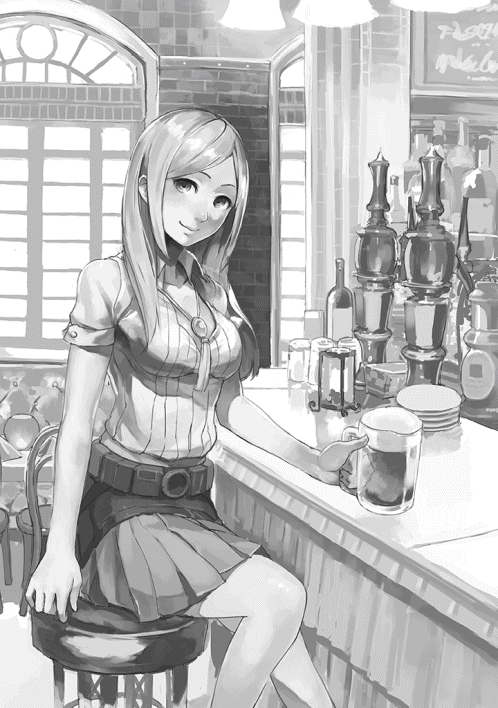
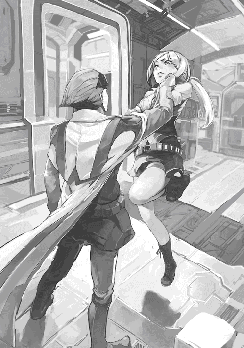
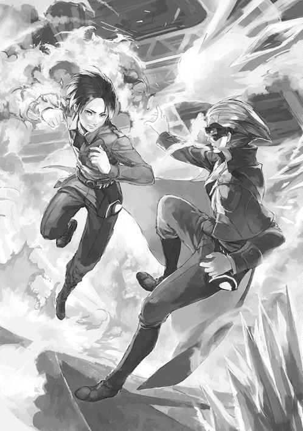
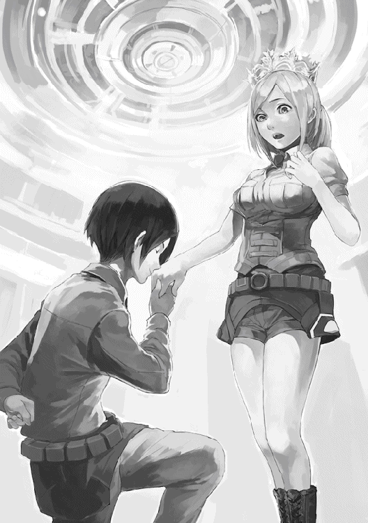
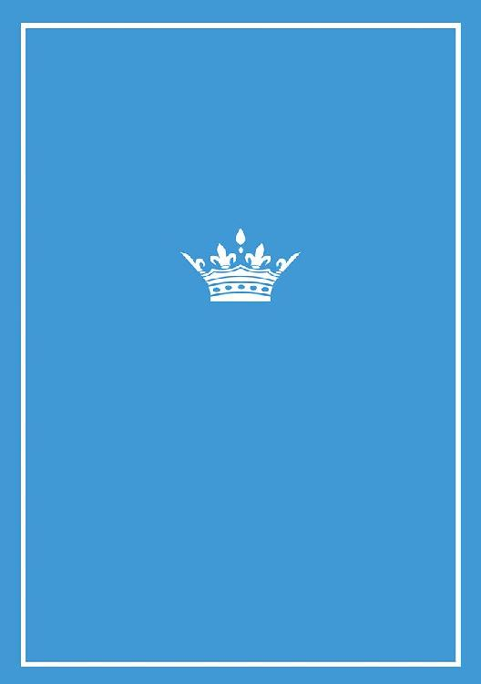

| 割られよ、凍てついた王冠よ 犬吠埼ナイン構想 (電子書籍普及委員会) | |
| 犬吠埼一介 | |
| denshi syoseki fukyuu iinkai (2015) | |
地上からはるか遠い地の底に、広大な空間が広がっていた。
粉塵で曇った空気を切り裂いて、天井や壁から、無数のライトの光が伸びている。
そこらじゅうから、岩石が採掘される轟音や、巨大な運搬車両の走る音が響いていた。
日の光のまったく届かない空間で、数多くの労働者たちが「マグナ粒子」の採掘に従事しているのだった。
ともすれば、時間の感覚がなくなりそうになる、閉塞感のある場所だけに。壁面には、一定間隔ごとに情報ディスプレイが設置され、時間、温度、湿度といった周囲の環境や、安全管理のための注意事項を表示している。
それらの情報は、彼らが身につけている大型の腕時計の画面にも表示されていた。
新たな岩盤へと掘削を進めているエリアでは、「マグナドライブ」を内蔵した大型の重機たちが、巨大なアームに取りつけられたドリルを猛烈に回転させ、深い地底にしか存在しない新エネルギー資源、マグナ原石を含んだ鉱石を削り、弾き飛ばしている。
周辺では、やや小さめの別の車両が、ホース状の装置を伸ばして、大小さまざまの破片となった岩石を吸い込み、内部の破砕装置で均等な大きさに砕き、粗い砂粒のようになったそれを、さらに別の運搬用ダンプトラックの荷台に注ぎ込んでいた。
こうして採掘されたマグナ原石は、採掘場の別のエリアに運ばれ、精製のための処理をされて、マグナ粒子となる。一連の採掘から精製までの作業は大半が自動化されていた。
多大な労力を要する工程は、新時代の駆動装置、マグナドライブを搭載した機械が担当しているため、採掘に従事する労働者たちが原始的な方法で岩肌と格闘することはない。
だが。この地下深くにある日の当たらない採掘場で、完全にすべてを自動化することが難しい複数の細かい作業を、多くの労働者たちが行わなくてはならないことは、非常に厄介な問題といえた。
前後に二つの車輪がついた縦長の踏み台部分に、ポールとハンドルが接続された、シンプルな構造のマグナ駆動ローラーボードを操りながら。イリヤは、そこだけが舗装された移動用の通路を疾走していた。
引き締まった、それでいて逞しさも感じさせる体躯をしている。明るいブラウンの短髪が逆立ち、顔には濃いスモークの入った無骨なデザインの大きなゴーグルをつけているため、口元以外の表情は伺えなかった。
何よりも彼の印象を強固にしているのは、身につけている独特の衣服だ。外套のように身体をすっぽりと覆う服の、胸の部分には、採掘場を管理する側......そして、それ以上に、このベリエルグという小国の支配者階層であることを意味する紋章が、大きくはっきりと刻まれていた。
数多く稼働している重機や車両を整備する職務を担当していた労働者たちが、近くを通り過ぎるイリヤに対して、会釈をして畏敬の念を示す。
イリヤは、そんな彼らの作業を俯瞰して、何らかの問題が生じていないかどうかを確認していった。
見渡す限りの、広い採掘場である。全体を自動的に監視するための装置はもちろん用意されていた。
イリヤも普段はそこでモニタリングを行っている。常時ではないにせよ、定期的に彼のような立場の人間が採掘場の見回りを行うことによって、労働者たちのモチベーションの向上や、不正の防止になるのだった。
原石の採掘のためのエリアを離れ、しばらく移動すると、精製のためのエリアに到達する。イリヤはローラーボードを停車スペースに立てかけると、頑丈なコンクリート造りの建物のドアを開けた。
内部では、粉砕された原石からマグナ粒子を抽出するための諸々の作業が行われている。それらを横目で見ながら、イリヤは精製エリアを管理する人間がいる場所へと向かった。
「お待ちしておりました、火曜様。本日分の納品はこちらになります」
「......ああ、確かに」
目の前の男がテーブルに載せた、黒い樹脂製の円筒を、四本。肩に掛けた鞄から取り出した、金属製の収納ケースの蓋を開き、空洞となっているスペースにぴったりと押し込むと、蓋を閉め、鞄にしまった。
一礼する男に小さく会釈をしてその場を離れると、表に止めてあったローラーボードを起こし、足を掛けながら無意識に「前へ進め」と思念を送った。
腰に巻いて装着した、やや厚みのあるベルトのような「マグナデバイス」の精神感応センサーが意思に反応して、マグナエネルギーを発生させると、ローラーボード側へと空間を経由して伝達する。ローラーボード内部のマグナドライブが力強く稼働した。
イリヤは、身体のバランスを巧みに操りながら、他の精製エリアを目指して通路を移動していった。
他にも、複数の採掘と精製のエリアが、セットで点在している。そのすべてを、見回りを兼ねながら訪れ、その日精製されたマグナ粒子を回収するのもまた、イリヤの担当職務だった。
ようやく、すべてのマグナ粒子のパッケージを回収し終えると、イリヤは採掘場の端、人通りの少ない箇所に設けられた隠し扉の前に立った。扉を一瞥するとすぐにロックが解除され、すばやく開閉するあいだに通り過ぎる。
その、ベリエルグの支配者階層だけがアクセスできる専用スペースで。イリヤは、ゴーグルを外し、鞄を下ろすと、外套についた粉塵を軽く払いながら脱いで、壁のフックに引っかけた。
上下の服を、「七曜」の一員として振る舞う際のものから、用意してあったごく一般的な労働者の服装へと手早く着替える。
脱いだ服を、完全に自動化された洗濯装置に放り込み、布製のデイパックに、マグナ粒子の入った鞄ごと収納した。続けて、マグナデバイスに意思を送る。逆立っていた明るいブラウンの髪が、見る間に、ナチュラルな黒髪へと変化していった。
先ほどまで採掘場を見回っていた姿とはまったく違う、ごく普通の青年といった外観を全身鏡で確認すると、イリヤはデイパックを掴み、廊下を通ってさらに奥にあるエレベーターホールに向かった。
普段この設備を利用するのは、七曜のうちのひとり、火曜である彼がほとんどだ。地下の採掘場の側に止まっていたエレベーターは、意思に反応して扉を滑らかに開き、イリヤを乗せて閉じると、遠い地上めがけて滑るように移動を開始した。
労働者たちが使う通常のエレベーターは従来からあるボタン制御になっているが、七曜専用の設備では、行動の迅速化のためにそうした単純なインターフェースは精神制御によって置き換えられていた。
数十年前に発見された新技術と、新たなエネルギー源は、それを占有するベリエルグという小国の姿を大きく変貌させた。
それまで注目されていなかった、地下の奥深くに眠っている広大な鉱床から採取される、特殊な成分と組成の岩石。マグナ鉱石と名づけられたこの岩石から抽出された粒子は、外部からある特定の刺激を加えることで物理学的な反応を起こし、質量のうちのほんのごくわずかの部分を消失する。その過程で、単なる熱や電気とは違う、純粋で柔軟なエネルギーを放出するのだ。
俗に、小石ほどの質量の物体であっても、そのすべてをエネルギーに転換することができれば、甚大な爆発が起き、街ひとつどころか見渡す限りすべてが吹き飛ぶといわれる。
マグナ粒子の反応は、そうした極端なものではなく、十分に制御されたものであるため、事実上の燃料電池として機能する。
また、放出されるエネルギーの今までにない特性が、多様な利用法を発達させた。ベリエルグで動作する機械のほぼ大半は、大小さまざまのマグナドライブを使って駆動しているといっても過言ではなかった。
しばらくすると、滑らかに動いていたエレベーターが速度を落とし、地上階に到着して停止した。ドアが開き、イリヤが外に出るとすぐに閉じた。
その専用エレベーターの地上側出入り口は、人通りの少ないエリアに、「不可知領域」、つまりベリエルグの支配者階層の、所有する施設として立てられた建物のなかに、目立たないよう物品搬入用に偽装して作られていた。
イリヤは、敷地内の狭い通路を通り、裏口から細い路地を経由して、何気ない風を装いながら街の雑踏に合流していった。
不可知領域のさまざまな職務を遂行する少数精鋭の実動部隊である、七曜......そのうちのひとり、火曜としての姿と。単なるごく普通の街の住人、イリヤとしての姿を使い分けることは、彼の日常だった。
長いこと地下の採掘場に籠もっていたために、地上の新鮮な外気が心地よく感じられる。
夕方の大通りに出ると、この日は採掘場での労働当番を割り当てられていない労働者たちが、地上側での職務に従事し、あるいは、買い物や食事など、さまざまな用事をこなしていた。
それだけならば、まだしもごく普通の街の光景として、不自然なことはなかっただろう。
違うのは、街のそこかしこで、明らかに人間とは異なるシルエットの存在が、周囲を威圧するようにして動き回っていることだった。
頭部に二つの赤い目が光るそれは、人工知能とマグナドライブによって駆動する自動機械である。民衆にマグナの力を奪われ悪用されることのないようにと不可知領域が敷設した、治安維持のための機構だった。
民衆たちは表向き、自動機械の存在を気にしていないように振る舞っているものの。おのずと目につくその支配のための装置に対して、警戒心を抱いていないわけではなかった。
支配者階層からの監視の目線という影が、彼らの日々の生活を絶えず覆い、暗雲として垂れ込めているのだった。
ごく普通の街の住人にしか見えない外見に扮したイリヤは、途方もない価値がある品の入ったバックパックをざっくりと肩に掛けて歩きながら、街の賑わいを眺めていた。
どうせ、通り道なのだ。荷物を不可知領域の本拠地まで運搬するついでに、酒場で食事を済ませるのが日課となっていた。
特に何事もない、いつもの光景だ。イリヤは喧噪に満ちた夕刻の酒場に入ると、カウンター席の端のほうに腰掛け、彼のような客におあつらえ向けに用意された定食メニューからひとつを選んで注文した。
料理を待ちながら、何気なく、ガラス窓から目の前の人通りを眺めているときだった。
ふいに、すぐ隣に人の気配を感じて、イリヤは何事かと視線を上げた。
「ハァイ。こちら、空いてるかしら？」
「......ああ。どうぞ」
「それじゃご遠慮なく」
身軽な動作で、彼の隣の席に伸びやかな肢体を滑り込ませてくる。長くてさらりとした金髪をたたえた、若い女だ。
白を基調とした明るい色と柄の半袖のブラウスから覗く二の腕と、短いプリーツスカートからすらりと伸びたふとももの眩しさに、一瞬、思わず目を奪われそうになった。
「この店でよく見かけるわね。あなたも採掘場帰りなのかしら？」
「まぁな。ちょうどさっき終わったところだ」
「私もなのよ！ まったく、お互いに大変よねぇ」
「ああ、そうだな......」
それほど混んでもいない店内で、どういうわけか強引に隣に座り、親しげに話しかけてくる彼女の唐突な態度に、イリヤは困惑して微かに目を細めた。
いったい、何なんだこいつは。そう思うあいだにも、目の前の女は、軽く手を上げてウエイトレスを呼び止めると、ビールの大ジョッキを二つ注文する。すぐに運ばれてきたうちのひとつを、イリヤの目の前に滑らせるように置いた。
「奢るわよ。お近づきの印に、ね」
「おいおい。いったいお前は......」
「私？ フラルよ。ただのしがない労働者」
「それにしちゃあえらく強引だけどな。俺はイリヤ。同じく労働者だ」
すでに彼女のペースに巻き込まれているのを感じながらも、イリヤはよく冷えて汗をかいたジョッキを手に取り、彼女のジョッキと軽く合わせてみせた。
さっそくビールを勢いよくあおっている、フラルと名乗った女の意図が、まったく理解しかねる。俺の何かを知っているのか？ いや......いくら何でも、そんなはずはないだろうが。

「ぷはーっ。やっぱり、採掘場上がりにはこれが一番！ ねぇ、あなたは週にいくつの当番なの？」
「別に聞くまでもないだろ。二つだよ」
「そりゃあそうよねぇ、悪かったわ」
フラルが、言葉とは裏腹にまるで悪びれもせず、笑いながらイリヤの肩を叩いてくる。
ベリエルグの民衆それぞれに割り当てられた採掘場労働の当番は、富裕層であれば、金銭によって代替することも可能だ。だがそれができるのは本当にごく一部の、特殊な職務を担当する人間に限られていたからだ。それ以外のほとんどを占めるごく普通の労働者に対しては、最大で週に二日間の当番が割り当てられていた。
彼らは、地下深くの採掘場で週のうち二日を交代制で採掘労働に従事し、残りのさらに数日を、地上でそれぞれに割り当てられた職務をこなすことに費やしていた。
「本当、やんなっちゃうわよね。この国の美徳は労働である、なーんていわれてるけど。私たち弱者大衆にしてみれば、単に駒として使われてるだけって感じ」
「まあ、仕方ないさ。俺たちの義務だからな」
「何よ。あなたも、マグナ技術さまさまっていう人たちの側なわけ？」
「そうかもな......この国がこうして豊かなのも、実際にマグナの力の恩恵だからな」
そんなありきたりなイリヤの答えに、フラルは別段気を悪くするでもなく。にやりと微笑むと、身体を思いっきり近づけて、彼に身を寄せるようにしてきた。小声で続ける。
「そう思うじゃない？ でも、採掘場で最近出回ってる噂なんだけど......日がな一日じゅう採掘してる、あのマグナ粒子は、単に私たちの生活を豊かにするためだけのものじゃないみたいよ」
「へぇ？ じゃあいったい、何のためなんだよ。マグナがなければ、この国で稼働する主要な機械のほとんどが動かなくなる。昔ながらの電気や何かは一部しか使われてないしな。それに、肝心のマグナ鉱石の採掘にだって、マグナの力は立派に使われてるだろ？」
彼女のやけに親密な仕草にどぎまぎしながらも。イリヤは、さも心外そうにマグナ技術の有益性を説いてみせた。フラルは彼の耳元にさらに顔を近づけ、誘惑するかのようにささやきながら言葉を続ける。
「いったい、何のためだと思う？ 日々採掘されてるマグナの量と、国中で使われてるマグナの量が、まるで釣り合っていないとしたら......残りは、いったいどこへ消えてるのかしらね」
「さぁな。そもそも、マグナはエネルギーなんだから、多少多いくらいでちょうどいいんじゃないのか。不都合はないだろうよ」
「どうしてそう脳天気なの......あらっ？」
イリヤに身を寄せるようにしていたフラルの足先が、床に置いていたデイパックに引っかかり、彼女は意外そうに声を上げた。
「ずいぶんと重たいのね」
「ああ......まあ、道具とか、いろいろとな」
こんなところでもし中身を見せろといわれでもしたらことだ。イリヤは彼女の視界から外れるように、デイパックを反対側の床へと足で強引に押しやった。
「お待たせしました！ 定食のお客様っ」
ジョッキを片手に話し込んでいた二人のところに、イリヤが最初に頼んでいた料理が到着した。フラルを気にするでもなく、彼はそのまま料理を食べ始めた。
「つまり......不可知領域の考えてることは、彼らだけにしか分からない。でもだからこそ私たち、弱者大衆の側は、その主張を完全に鵜呑みにはできないってことかしらね」
「ふーん？ そんなご大層な話かねぇ......」
いかにも労働者向けに塩気を効かせた薄切りの牛バラ肉を焼いた料理を、ナイフとフォークで捌きながら。イリヤは気のない素振りで彼女に話を合わせる。
彼はすでに、このフラルと名乗った謎の女の素性を、怪しみ始めていた。
いかにも唐突に話しかけてきたことといい。話の内容に、ベリエルグの支配者階層に対する、懐疑と不信がにじみ出ていることといい。
本当に、何者なんだよ、こいつは。何をどこまで知ってる？ 確かに、ぱっと見だけは明るくて魅力的な女だとは思うが......。
そんな風に思いながら料理を口に運んでいたイリヤは、ふと急に、フォークを操る手先が重たくなるのを感じた。何だ。酔ったわけでもあるまいに。急に目がかすみ、目の前の光景すらはっきりと見えなくなる。貧血にも似たような症状が突如として生じた理由は、すぐに分かった。
フラルが、その魅力的な肢体を、イリヤの身体に触れ合わせながらしなだれかかってきている。腕を絡め、豊満な両胸を形が歪むほどに押し当てるようにして。
すぐそばに広がる、彼女の髪から漂ういい香りに陶然となりながらも。イリヤは、事態を理解して衝撃を受けていた。
この力......「精神操作」だ。マグナエネルギーを人間に対して直接作用させることにより、相手に催眠効果を与えることは、確かに可能だった。
だが。それを、何の装備もなく素手で行えるのは......彼ら七曜のように、あらかじめ身体じゅうにさまざまな機能のマグナドライブをインプラントしている、事実上のサイボーグに限ってのことである。
しかも、その高度な技術は、不可知領域に深く関わる者たちだけの秘匿としていたし、そもそもそのようなマグナの使い方があること自体、ごく普通の民衆が知る由もないはずだった。
民衆たちが普段から腰に巻いているごく一般的なベルト状をしたマグナデバイスで行使できる力は、その用途があらかじめ極めて限定されているのである。
「あら、どうしたのぉ？ まだ一杯しか飲んでないのにもう酔っ払っちゃった？」
「......お、お前は......いったい......」
微笑みを絶やさず、まるで仲のいいカップルのように彼に濃密に寄り添いながら、フラルは、気遣うような声を掛けてくる。
それを意識の片隅で聞きながら、イリヤは、彼女の身体から送り込まれる精神操作のマグナの影響によって、意識が少しずつ薄れていくのを感じていた。
「......様、お客様っ、大丈夫ですかぁ？」
「ん？ あ、ああ......」
ウエイトレスに揺り起こされる声と気配を感じて、イリヤは、ぼんやりとした意識のまま目を覚ました。目をしばたかせながら周囲を見回す。
フラルがいたはずの席はすでにきれいに片づけられ、彼の目の前には、すっかり冷め切った食べかけの定食と、飲みかけのジョッキがそのまま残されていた。
まるで、最初から何も起こらず、単に疲れから眠り込んでしまったかのような錯覚を覚えかける。だが、まさかそんなはずがないことは明白だった。
まずいことに、身体の各所にインプラントされた精密なセンサー群に、微弱なノイズのような違和感が残っている。その感覚は、身体の外から、何らかの電磁的なスキャンを受けた可能性をも示唆していた。
すばやく手持ちの備品をチェックする。財布や通信端末は元の場所にあった。だが......激しい嫌な予感とともに恐る恐る確認すると、やはり、足下に置いてあったはずのデイパックが姿を消しているではないか。
「ったく。やってくれるじゃねーか、あの女......」
思わず、悪態をつく。マグナ粒子の運搬中に食事をしていたのは彼自身の落ち度といえばそうなるが。
そもそも、ごく普通の民衆に完全に偽装した状態である今の彼に、こうして恣意的に攻撃を仕掛けてくる者が現れる事態など、まずもって起こりえないはずだった。むしろ、七曜という立場の自分を狙い撃ちされないための民衆への偽装なのだから。
ため息とともに椅子から立ち上がる。会計しようと財布の入ったポケットに手を入れたところで、先ほどまではなかった、折り畳まれた紙片がねじ込まれていることに気づいた。
「第三精製エリア裏側 廃材倉庫」
とだけ、書かれている。イリヤは紙片を元通りに折ってポケットにしまうと、まるで何事もなかった風を装いながら会計を済ませ、酒場を後にした。
大通りでは相変わらずいくつもの自動機械たちが闊歩し、周囲をくまなく警戒している。だが、さすがに店のなかまではその視線も完全には届かなかった。
「へぇ、それで？ まんまとパッケージを丸ごと全部盗まれたってわけか」
「何てこと。採掘場からの上がり、一日分、全部ですよ！ 考えられませんね」
「お前の報酬の数年分以上にも相当するかもしれんのだぞ、イリヤ」
ベリエルグの支配者階層である、不可知領域の本拠地がある大きな施設の、中枢に当たる場所......彼ら七曜が「王座の間」と呼んでいる広い部屋で。イリヤは、同じ七曜であるクーンとフィズに、事の次第を報告していた。
二人とも、先ほどまでイリヤが着ていたのと同じ、七曜の制服である外套を着ている。
青い髪をオールバックになで上げた、尊大な態度のクーンと。一見して、彼よりも若くて純情そうな顔つきをしながら、意地悪く口元をつり上げている銀色のやわらかい短髪のフィズは、揃って、イリヤを軽蔑の視線で睨みながら批判していた。
もっとも......イリヤと同じ、不可知領域の支配を維持するために組織された七曜のメンバーである、水曜のクーンと、木曜のフィズは、体内にマグナドライブを複雑にインプラントしたサイボーグであるため、髪の色や形くらいならば本人の意思である程度自在に変えられるのだったが。
「任務中に寄り道なんてしてるからですよ」
「......せめて、高度な偽装といってくれよ」
「済んだことはいい。それで、どうする、イリヤ。まさかこのままにするわけではないだろうな？」
言葉とは裏腹に有無をいわさぬ冷酷な口調で、クーンが詰問した。
「心当たりはあるから、すぐ当たってみるよ。どうもおかしなことになってるらしい」
「そりゃあそうだろうな。何しろ相手は、お前が七曜であることまで知ってたわけだからな。その女、本当に我が国の労働者なのか？ まさかテイロスのスパイでは......」
「そこまでの深刻な事態じゃないことを祈ってるよ。マグナ粒子だけでなく、インプラント技術まで探られたとあってはな」
「当たり前だ、馬鹿者！」
今回のことが、ベリエルグの防衛にまで関与しかねないとあって、クーンは苛立ちを隠そうともせず。何事かを思案しながら、その場を歩き回った。
「テイロス侵攻のためのマグナ備蓄が始まって以来、採掘拡大ばっかりでしたからね。おおかた、労働者たちに不満が溜まってるんじゃないですかぁ」
「不満？ 不満だと？ 労働者風情が。我が国の支配者階層は不可知領域であり。その支配の執行は、我々七曜こそが行うのだ。それをやつらにゆめゆめ忘れさせてはならんぞ！」
「仰るとおりですとも、クーンさん」
機嫌を取ろうと、フィズがにこやかな笑みを浮かべながら同意する。クーンは、彼らがいる広間よりも数段高いところに設置されている場所を見やった。
ベリエルグ全体を睥睨するようにして、台座の上に設置された「王冠」が、白く冷たい光を帯びている。特に派手な装飾は施されていないシンプルなデザインでありながら、ただならぬ威圧的な存在感があった。
このオブジェクトこそが、ベリエルグの権力の象徴なのである。王冠を現時点で所有している者たちが、国を運営し、支配するのだ。
マグナ技術が勃興し、国の在り方がそれに依存したものへと大きく変わっていくなかで、いつしか、現在の体制が形成されてきた。
名目上、王冠を物理的に簒奪することで、支配を覆すことはできるとされていたが。常に七曜という力強い存在が守護しているそれを実力で奪い取ることなど、これまでに試そうと思った者はまずいなかった。
支配者階層である不可知領域の中枢を担っているのは、人間ではない。ベリエルグの全土を効率よく支配し運営するために過去に作り出された、複雑高度な人工知能である。
不可知領域からの指示は、七曜の身体にインプラントされた受信装置に対して、定期的かつ的確に送られてきていた。
全土に張り巡らされた電脳が支配する小国。権力の象徴として存在する王冠と、それを守り、忠実に指示に従う手足としての七曜。彼らの国家は、そんな風にして機能していた。
「明日にでも仕掛けてみるよ」
「くれぐれも、これ以上ドジを踏むなよ。仮にも七曜としての自覚を持つことだ」
「お願いしますよぉ。イリヤさんが頼りにならないとなれば、非番の日の代役だけじゃなくて、僕が全部、採掘場管理やらないといけなくなるんですからね」
いいたい放題の二人を背にして、イリヤは王座の間を後にした。まったく、フラルとやらのせいで、えらい迷惑である。
それにしても、いったいあの女は何者なのか。それは、例の紙片に書かれた場所を訪ねることで、すぐに明らかになるはずだった。
人通りのない、静かな街路を、イリヤは足早に歩いていた。あれから、細々とした雑務を片づけて、ようやくの帰宅である。
春が過ぎ、初夏へと向かう季節の、満月のきれいな夜だった。街の住人たちはとっくに寝静まっていて、野良猫一匹見当たらない。
足音が、湿度を含んだやや冷たい空気に反響する。等間隔に立つ街灯に照らされて、長く伸びた複数の影が、足下の地面に複雑な模様を描いていた。
しばらく歩くと、中央街から離れた、住居ビルが立ち並ぶ一角へとたどり着いた。
コンクリート造りの、無骨なデザインのアパートメントの入口をくぐる。慣れた手つきでボタンを押した。鈍い音と振動を響かせながらエレベーターが到着し、イリヤが乗り込むと目的の階へと移動していった。
廊下を抜けて、突き当たりにある角部屋が、彼の住居である。入口の前に立ち、ドアに取りつけられた認証装置に手のひらをかざすと、解錠される微かな音が響いた。
分厚い金属製のドアを開き、真っ暗な部屋へ入ると、すぐに閉める。オートロックがすばやく施錠され、同時に、時間帯にマッチした暖色の間接照明によって、部屋が照らされていった。
微かなため息をつくと、イリヤは腰につけていたベルト状のマグナデバイスを取り外し、ずしりと重たいそれを、部屋の中央の作業場と食卓を兼ねたテーブルに置いた。
全身に複雑にインプラントしたマグナドライブを自由自在に行使できる七曜とはいえ。マグナ粒子の補給やメンテナンスが容易なことから、民衆たちと同じベルト式のマグナデバイスを補助的に併用していた。
そのまま、ブーツを脱ぎ捨て、上着とズボンを手早く脱いで、シンプルなインナーのみの姿となる。簡素なキッチンの冷蔵庫を開けて覗き込み、飲みかけの牛乳を見つけると、取り出してひと息に飲み干し、空のパックをくずかごに向けて放り投げた。
ようやく、長い一日が終わる。壁のデジタル時計が、深夜の一時過ぎを示していた。静まりかえったアパートメントの部屋にはただ、冷蔵庫とエアコンの立てる微かな駆動音だけが響いていた。
そのまま、部屋の奥にあるシングルベッドへ移動する。照明を消すと、カーテンの閉められた窓の隙間から漏れてくる月明かりが残るだけとなった。
ベッドに身体を横たえ、薄いブランケットを乱雑に掛ける。軽く目を閉じ、体内にインプラントされた無線装置の電子的なセンサーに意識を向けると、全方向に向けて周波数帯を解放した。
砂嵐のようなノイズが小さく聞こえるなか、遠く微かに、さまざまな無線通信の音声が聞こえるともなく聞こえてくるのを、ＢＧＭの代わりにするのが、イリヤの習慣だった。
こうしていると、この街の一角にある古いアパートメントにいながらにして、街全体を包み込む大きな空気の層と一体になったかのような感覚を得られるのだ。
一日中、忙しく身体を動かし続けていたこともあって、ほとんど間を置かずに、深い眠りに落ちていった。
広大で、果ての見えない、仮想的な電脳空間のなかを、ノイズ混じりのアジテーションメッセージが、震えながら伝播していった。
いったいどこから発信されたのかも分からないそれは、一定の間隔で自動的に再発信されながら、こだまのように電脳空間を響き渡っていった。
「......この闇の時代を、諸君らの手で、光の時代へと変えてみる気はないか......？」
電子的でありながら、どこか人間味の感じられる、若い男性の声が語りかけてくる。聞き取るであろう者たちを誘うようにして。
「さあ、今こそ、過剰な競争と、搾取と、戦争とに明け暮れる支配者階層を打倒しようではないか。諸君らが、我々と共に、それを成し遂げるのだ。誰もが幸せになれる、光の時代を作るために！」
同時に流れている映像では、周辺国家との複雑な利権を伴った軍事的衝突や、それに伴って深刻化する、国内での搾取的労働の場面が映されていった。
「入ろう、ウインドウォーカーズに！ 我々は、諸君らの参加を心待ちにしているぞ！」
「ＷＷ」という二文字を威風堂々とアレンジしたロゴマークが大映しになり、勇壮な音楽が鳴り響いた。
弱者大衆による革命を目標とする組織の、加入のための連絡先が表示される。映像と音声は、そこで途切れていた。
電脳空間の海を、煽動的なメッセージがじわじわと広がっていった。当てなどないようで、それでいて確実に。ウインドウォーカーズへの加入者は、日増しに増えていった。それほどまでに、この時代の人々の抑圧的な体制に対する不満は募っていたのである。
人波から隔絶された夜の裏通りで、二人の男が向き合っていた。
地面に膝をついているエルヴンを前にして、グレックが、彼を大声で厳しく咎めていた。
「何てこった。お前ともあろう者が......やつらに、俺たちの情報を流してたとはな」
グレックの冷たい声色に、エルヴンは黙ったままただ顔を伏せる。
その態度にさらに激昂したグレックは、腰のホルスターから小型の拳銃を引き抜き、撃鉄を起こして目の前の男に突きつけた。
「なぜだ！ なぜ裏切った。金か？」
ウインドウォーカーズの重要な内部情報が、支配者階層の側に、どこまで露呈してしまったのか......。多くの仲間たちが危険に晒される可能性に、グレックは怒りを抑えきれず、引き金を引く指先に思わず力が籠もる。
「殺すな！」
だが。そこに、鋭い制止の声が掛かった。
メーリが、二人にゆっくりと近づいてくる。彼女の爛々と輝く双眸が、エルヴンとグレックの二人を睨み据えていた。
「いいのかよ。何しろ、こいつは......」
グレックが訝しげにメーリを問い質す。だが、彼女は力強く答えた。
「ホワイトは、そんなことを望まない」
メーリやグレックと目を合わせられないままその言葉を聞いたエルヴンは、がっくりとうなだれた。
想い人であるメーリと、自分との。そして、ウインドウォーカーズのリーダーであるホワイトとの、複雑な関係を思いながら。ホワイトを想うメーリの意思によって、自分は今、皮肉にも救われたのだ。
支配者階層と、ウインドウォーカーズとの、激しい混戦のなか。ホワイトを含む精鋭部隊は、敵陣の奥深く、中枢部分にまで潜り込むことに成功していた。
街のそこかしこでも、陽動を含めた激しい銃撃戦が繰り広げられ、大小の火の手と煙が上がっていた。
革命の煽動者であるウインドウォーカーズを支援する、数多くの民衆たちの勢いに後押しされながら、武装したメンバーたちが支配者階層の本拠地各所から侵入する。
動転し防衛の手立てが乱れた彼らの隙を突くかたちで、ホワイトたちは一気に司令室になだれ込むと、用意していた大型の電磁グレネードを起爆させた。
電脳空間を活用し、自動機械を含む戦力を動かしていた支配者階層たちは、その捨て身の攻撃によって壊滅的な打撃を受けた。
彼らの防衛活動が無力化されたのを見るや、ウインドウォーカーズのメンバーたちが、支配者階層の司令室を取り囲んだ。
そして......支配者階層の投降。革命はついに成功したのだ。だが、電磁グレネードの爆風の余波を受けて、すぐ近くにいたホワイトは身体に深手を負い、意識を失っていた。
ウインドウォーカーズのメンバーたちが必死で介抱した結果、彼の意識だけでも、何とか電脳空間に救出することができたのだった。
電脳空間に作られたホワイトの部屋で、メーリは、悲嘆に暮れて涙を流していた。
側では、エルヴンとグレックが、どうすることもできずに立ち尽くしている。
ホワイトはそんな彼らを見て笑いながら、事もなげに、お前たちみんなで、存分に幸せになればいいじゃないか、と諭してみせるのだった。
せっかく、闇の時代に終止符が打たれ、これからは光の時代が訪れるのだから......と。
だが。実際にはその後、長い時間が過ぎて、急激な技術革新によって勃興したマグナ技術の発展に伴う社会の大変革によって、皮肉にも彼らウインドウォーカーズのメンバーたちが望んだのとは異なる未来となっていた。
民衆たちは、呼ぶのだった。彼らが生きる現代を指して、「影の時代」と。
翌朝。イリヤは、フラルが彼のポケットに残した紙片に書かれていた場所を訪れていた。
インプラントされた無線センサーを解放しながら寝ていたために、昨夜、夢の中で、過去のさまざまな出来事の残響......電子的ノイズを見聞きしていたような気がした。
恐らくは、実際にあったことなのだろう。この世界はかくして、くり返される革命を経ながら現在に至るのだ。
急速に生み出されたマグナ技術という新たなエネルギー源への依存と、それを前提とした搾取的な社会構造の形成という時代の流れもまた、れっきとしたひとつの革命といってよかった。
それが、弱者大衆の真に望むものであったかどうかは、別として、だが。
採掘場の通路をローラーボードで移動し、目的地の前で停止すると、停車場に立てかけて建物へと近づいた。第三精製エリアの裏側にある廃材倉庫だ。
イリヤが入っていくと、待ち構えていたように、そこにフラルが立っていた。
「やっぱり、お前だったんだな......」
「ええ、そうよ。見てのとおりね」
呆れるイリヤに対して、まったく悪びれもせずに答えてみせる。
彼女は、昨日とは打って変わって、労働者然とした動きやすい服装に身を包んでいた。
だが、そのきれいな金髪と、快活で魅力的な表情、豊満な両胸に、すらりと伸びた二の腕や両脚といった魅力的な肢体の特徴は、簡単には見間違えようのないものだった。
「マグナ粒子は、いただかせてもらったわ。あれだけ大量にあればずいぶんと使い出があるわね。あと、ついでにあなたの身体の秘密も探っておいたから」
「......返すつもりはない、ってことだな」
「当然でしょ？ せっかくの鹵獲品だもの」
にやり、と笑みを浮かべて、彼女はイリヤの追求をかわしてみせた。
「今から仲間のところに案内するわ。いっとくけど、あなたが何者かは誰もが知ってるわけじゃない。伏せられてる情報よ。その意味......分かるわよね？」
「どういうことだよ。まあ、ここに来たからには、逆にお前たちが何者なのか、こっちこそ探らせてもわらないと困るんだがな」
「あら。じゃあちょうどいいじゃない。利害関係が一致したわね」
さもうれしそうなフラルに、イリヤは渋面を浮かべてみせる。
「......さっさと案内してもらおうか。俺が何者かは黙っておいてやらんでもない。ごく普通の労働者にしか見えない恰好だしな」
「準備のいいことね。助かるわ」
フラルは目線でイリヤについてこいと合図すると、彼に背中を向けながら建物のドアを開け、奥に入っていった。
一見、採掘のためのがらくたが山のように放置された、単なる廃材倉庫でしかない。このような意味のない場所に対してまでは、不可知領域といえどもコストを割いて監視装置を設置してはいなかった。
地上の街に配備されているのと同じ自動機械たちも、採掘場に一定数存在する。だがその大部分は、大型の採掘機械が消費するマグナ粒子のカートリッジを交換する作業を、労働者たちが適切に行っているか監視するなど、重要度の高い部分に割り当てられていた。
自動機械のメンテナンスは、専門のユニットによって完全に自動化され、マグナ粒子の補給もされている。一方、採掘のための大型の機械となると、手動でのマグナカートリッジ交換や故障箇所の修理が必要となる。それらを担当するのも労働者たちの職務だった。
しばらく進むと、さらに二番目のドアがあり、奥側との空間が隔てられていた。見張りは立っていないものの小さな覗き窓が作られていて、フラルが近づいたのに呼応して手動で内側から開かれた。
無言で、何かを促している。フラルは、合い言葉と思われる台詞で応えた。
「風と共に歩こう」
すぐにロックが外れる音がして、ドアが外側に小さく開かれると、フラルはすばやく中に入った。イリヤが後に続く。
今日び、何とアナログなセキュリティだろうか。もちろんそんなことをいえる雰囲気ではなかったが。電子化された何もかもを欺く、意表を突いた方法といえるかもしれない。
室内は、それほど広くはなかった。外とは違い、廃材倉庫としてのあれこれがすっかり片づけられ、大きな机や、たくさんの椅子が置かれていた。
さも、何らかの政治運動をここで行っているといわんばかりだ。フラルの、何者かを全員が知っているわけではないという牽制があるため、状況が判明するまで迂闊に発言はできない。彼らの動きを見守ることにした。
「何だフラル、そいつは新入りか？」
「ええ。入隊希望者よ」
秘匿性の高い場所に入ってきた見慣れない人間を見咎めて、入口にいた男が目ざとく確認してくる。
彼女は落ち着いて答えると、イリヤを誘導して部屋の端にある椅子に座らせた。
不審に思われない程度にイリヤは周囲を見回す。不可知領域が監視装置をつけていない抜け穴を突いて、彼らはここをアジトとして使っているのだろう。
「連れてきたわ」
「有難う。彼が例の......」
部屋の奥にある大きな机で書類を整理していた、若くて知性を感じさせる精悍な男に、フラルが声を掛けると。男はすぐに事情を察して席を立ち、イリヤに近づいてきた。
「ウインドウォーカーズへようこそ。ここの代表を務めているリディだ。よろしく」
「......ああ。俺はイリヤだ」
「まずは入隊を歓迎しよう。詳細については追々いろいろと覚えてくれ」
組織のリーダー格である男に不審に思われないよう対応したものの、イリヤは、内心で驚いていた。
ウインドウォーカーズ、といったな。かつてこのベリエルグを覆っていた独裁的な旧体制を解体した、古い時代の革命組織だ。
だが、彼らがいったいどんな意図でその名前を継承しているのかは、この場の雰囲気を見ればおおむね推測がつくというものだった。
不可知領域が支配する現在のベリエルグの体制に批判的で、不満を持っている労働者たちがメンバーとして集まっているのだ。それを指揮しているのが、目の前の男、リディというわけである。
「まったく、網の目のような監視網だな。これじゃ隙の突きようがないじゃないか」
「まあそういうな。どこかに穴はあるはずだ。やつらを殲滅するわけじゃない。王座の間の王冠を一瞬持ち上げればいいことだからな」
「だから、それが大変なんだよ」
若いメンバーたちが、テーブルの上に大きな地図を広げて、街中の大通りや不可知領域の本拠地周辺に至るまでそこらじゅうに設置されている監視装置と、自動機械の巡回ルートを書き込んでいた。
さして広くもない部屋のなかに、男女合わせて十数人がたむろしている。それぞれが職務の合間や休暇を使って活動しているのだとすれば、今ここにいるだけがメンバーのすべてではないのだろう。
何人かは、空いたスペースを活用して、機器を使って身体のトレーニングに励んだり、格闘のための体術を習得したりしていた。
いにしえのウインドウォーカーズにはまだ規模としては及ばないものの。確かに、支配者階層に対しての抵抗を企てている集団だ。彼らはすでに一定の脅威であるといえた。
「何でも、王冠を守っているのは、七曜という精鋭部隊だそうじゃないか」
「そうらしいな。いったいどうやってやつらを出し抜けばいんだ？」
「......難しい問題だよ。ただでさえ、山ほどいる自動機械だけでも難儀するのに」
「だが、ほんの一瞬でも例の王冠を持ち上げれば......その瞬間に、権力の委譲が起きるといわれてるぞ」
「それが本当ならいいがな。まだ誰も、その現象を見た者はいないんだ」
聞こえてくる話の内容から、彼らが実際に不可知領域の支配のシステムについて詳細な知識を持っていることが分かった。そんなことをいったいどこで調べたのだろうか。
確かに、ベリエルグの体制を見かけ上だけでも民主的に見せるために、王座の間の王冠を手にした者が、支配のための権力を握ることができるとされている。
だが実際に、無数の自動機械による警備をかいくぐり、その奥で待ち構える七曜たちを倒して、王冠を手にすることができる者がいるとは......七曜の一員、火曜であるイリヤ自身にとってすら現実的とは思えなかった。
彼がもし、何らかの理由で王冠の奪取を試みたとしても。最終的に、王座の間を守っているクーンやフィズ、あるいは他の七曜と対峙することになる以上、そう簡単に事を成すわけにはいかないだろう。
ふと、昨日の夜に見た夢のことを思い出す。かつてどこかで目にした記録映像が潜在意識として浮かび上がったものだろうか。
しかし今こうして、ウインドウォーカーズの思い描いた理想を再現しようとする者たちが集まっているのを見ると、イリヤの胸中には複雑な思いがあった。
日常的に、採掘場当番として、マグナ粒子の採掘を管理しながら。日に日に拡大していく採掘エリアの範囲と、マグナの力に助けられているとはいえ、過剰な労働に駆り出され、従事させられている弱者大衆の姿を。共に、目にしているイリヤだからこそだろう。
つまるところ、不可知領域の思惑は、本当に正しいのだろうか？
確かに、マグナ鉱床は、ベリエルグ全土の地下奥深くに幅広く分布しているとはいえ、さすがに無尽蔵ではない。
社会がこれほどまでにマグナへの依存度を高めていくに従って、同じ地質学的国土を持つ隣国テイロスへの侵攻という発想は浮かぶし、魅力的に映るだろう。
マグナエネルギーの存続が、国家の繁栄と軍事的覇権の両方に、強く深く関わっている。
民衆に対して、それらの事実は詳細には明かされていない。知っているのは辛うじて、今目の前にいる彼らくらいか。
だが......どれだけ彼らに対して同情的になったところで。自分自身が七曜の一員、火曜であるという立場は、たやすく打ち消せるものではない。その点を、彼らはいったいどのように考えているのだろうか。
リディの机の上には、昨日イリヤが運んでいる最中フラルによって奪われた、丸一日分のマグナ粒子のパッケージが置かれていた。
「これだけのマグナがあれば、どんな風にでも使っていけるぞ」
「王冠を奪取するのもありだし、不可知領域に対しての交渉材料にもなるわね」
「ああ、そうだな。よくやってくれた」
リディに功績を評価され、フラルは笑顔を浮かべて喜ぶ。その心底うれしげな様子に、イリヤは思わず憮然とした。
二人の様子に嫉妬を覚えたというほどではなかったが。マグナを奪われたせいで、こちらは逆に立場を失っているのだ。フラルと目が合うと、彼女は悪戯っぽい笑みを浮かべた。
(あなたから奪った、ってことはこの三人以外には内緒なんだからね)
とでもいわんばかりに睨みつけてくる。呆れていると、リディが、真剣な表情で彼のほうを見ているのに気づいた。
「......ずいぶんと本格的な組織なんだな」
彼らに近づきながら、率直な感想を述べる。正直、ここまで準備を重ねているとは、直接目にするまで思わなかった。
「我々は、君の活躍に、特に期待している」
リディが、重たい言葉を、噛みしめるようにしてイリヤに向けた。
「さあ......それはどうかな？」
不可知領域に仕える、忠実な精鋭部隊のメンバーと知った上で。ウインドウォーカーズ側との二重スパイをやれということなのだろうか。それとも、それ以上の......完全なる、破滅的な裏切り行為まで期待しているということだろうか。
そうなると、暗にそんなことを要求してくるリディも、さすがに組織を統率するだけあって、フラル同様狡猾で油断のならない相手なのかもしれなかった。
だが、むしろそれこそ......おおよその事情を察した上で、イリヤを偵察のためにこの場に使わしている、七曜の事実上のリーダー、水曜のクーンもまた、リディと同じかそれ以上に警戒すべき相手だといえた。
「不可知領域は......このままいけば弱者大衆を、採掘労働と兵士という、二重の意味での使い捨ての駒にしてでも、マグナによる経済と軍事の覇権を推し進めていくことになるわ。私たちは今、それを防ぎたいと思ってるの」
「軍事的覇権？ まさか、ベリエルグの外側とかよ。そんなことは、そんな悲惨な歴史は、まさに過去のウインドウォーカーズが革命によって否定して、すでに禁止したはずだろ」
「そのまさか、よ。それに、他でもないあなたならすでに分かっているはずよね。私たちですら、いろいろな調査や監視を行った結果、然るべき帰結として、その事実を導き出せているんだから」
フラルは、憂いの表情を浮かべながら、ベリエルグが近い将来進むであろう暗黒の未来について力説した。
悲惨な過去があったからこそ、それを否定するべく革命が打ち立てられ。ほんの一時とはいえ光の時代が訪れた。だが、現在、ここにあるのは影の時代だ。
そしてまた、それ以上に、弱者大衆が労働者や兵士として搾取され、使い捨てられるような闇の時代が再来するというのだろうか。
「まだ今だからこそ、止められるし、変えられるのよ。恐らくは、過去に私たちが起こした革命よりずっと小さな行動でもね。そこに勝機はあると思ってるわ」
「そうだ。不可知領域は現状、暫定的な警戒しか民衆に対して行っていない。傲慢なやつらは、自分たちが占有するマグナの絶対的な力に酔い、体制にあぐらをかいているのさ」
フラルの言葉に、リディが同調した。そうしてウインドウォーカーズの思想を喧伝することで、敵対的属性の七曜の一員であるイリヤを、説得できると思っているかのように。
イリヤはふと疑問に思い、小声で彼女に質問した。
「なるほどな......それにしても、なぜ、俺を誘ったんだ？ よくない結果になることも考えなかったわけじゃないだろ」
「ふふっ......女の勘ってところかしらね。あなたの動きは、だいぶ前から見させてもらっていたわ。ごく普通の労働者のふりをしてね。あなたにはどこか迷っている素振りがあった」
「迷っている？」
「そうよ。客観的に見ても、どうやら組織のなかで冷遇されているようだし。それはつまり逆説的に、あなたが彼らに対して盲目的な信頼を寄せていない証拠だと思ったのよ」
「ふーん。その程度の判断でねぇ......もちろん、俺が何のためにここに来たかだって分かってるんだろうが」
完全に納得したわけではなかった。フラルの言葉には、一面の真実が含まれていることも確かではある。
だが......自らの組織の重大な命運を、そんなごく一縷の望みに託すものだろうか。そこから先は、それこそ女の勘がものをいうのかもしれなかった。
「いい結果を期待してるわよ！」
儀礼的な笑顔を浮かべながら、フラルはイリヤにそんな風にいってみせた。リディもまた、同感だという風に彼を見ている。
イリヤは、特に何も応えないまま彼らに背を向けると、それ以上することもなくなった廃材倉庫の隠し部屋を後にした。
内偵したが、特にこれといった脅威には該当しなかった。様子を見るため、引き続き労働者として彼らと接触する。
そんな風に、クーンとフィズに対して報告すればいいだろうか。イリヤの胸中には、複雑な思いが交錯し、渦巻いていた。
ベリエルグという国家全体のこと、ウインドウォーカーズのメンバーたちのこと、そして、七曜として生きてきた彼自身のこと......。
いつかは、選ばなければならないのかもしれない。七曜という立場に従属しているからこそ、長年にわたり押しつけられてきた大義か。それとも、日々の暮らしのなかでおのずと芽生えてきた、彼自身の実存か。
そのどちらかを選ぶことによって、あるいはこの世界が変わり、あるべき姿へと近づくことになるかもしれない。そうすれば、ベリエルグのすべての人々が、本当の幸せを得られるのだとしたら。
遠からず訪れる未来が、フラルの予測どおりだとして。俺はいったい今、どうすればいいんだ......？
山と森に囲まれた、内陸の小国ベリエルグの国境付近......同じく、豊富なマグナ鉱床を持つ隣国テイロスとの境界線に当たる空域を、すばやく飛行する三つの人影があった。
不可知領域に忠実に仕える精鋭部隊、七曜のうち、土曜のシャール、日曜のヴェネス、月曜のドランたちである。
身体に複雑にインプラントしたマグナドライブへと、豊富に装填したマグナ粒子のカートリッジから、無尽蔵と錯覚するほどの豊富なエネルギーが送り込まれる。腰にはさらに、民衆たちと同じように、マグナデバイスのベルトを補助的に巻いていた。
熱や電気といった旧来からあるものではなく、純粋で柔軟なエネルギーとして直接放出し、空間に伝播させられるマグナの特性を利用して。彼らは、全身から推進力を生じさせ、空中を高速で飛んでいた。
「前方から敵機。この機影は無人偵察機だな」
「ちょうどいい。揉んでやるか」
顔に掛けた大きなゴーグルのスモーク入りのグラスに表示される、詳細な周囲の観測データから敵機の飛行経路を予測すると、彼らは散開して迎え撃つ体勢を取った。
お互いに亜音速で飛行しているため、距離が一気に縮まる。七曜たちの姿は、あくまでも人間のサイズであり、エンジンなどの熱源もないため、テイロスの無人偵察機のレーダーにはまったく映っていなかった。
正面から接近していたヴェネスが、偵察機とのすれ違いざまに、一気に急旋回して背後に回り込むと、攻撃の射程に捉えたまま、しばらく追跡する。
ゴーグルの情報で、同時に左右から挟み込むようにして、ドランとシャールが迫っているのが分かった。
相手が今回のようにある程度大型の機体でも、マグナの力があればその速度に対処することができるし、高機動時の重力や空気抵抗への対策も取れる。
それを十分に確認すると、ヴェネスは右手をまっすぐに伸ばし、目の前の偵察機に対して強力なマグナエネルギーを一気に放出した。
金属がねじれ、ひしゃげる不気味な音を立てながら、圧力を受けた機体が崩壊してばらばらになると、一瞬後、燃料に引火して爆発四散した。
真っ黒い煙や破片を避けながら速度を落とす。大地に向けて落下していく機体の残骸を見下ろしながら、ヴェネスたちは嗜虐的な笑みを浮かべていた。
「何だ、物足りない。チョロ過ぎるだろ」
「あれは単なる無人偵察機だからな。テイロスの軍備を侮るわけにはいかんよ」
「マグナ戦闘はまだ不完全な技術だからな。小出しにして実績を積んでいくしかないさ」
いかにも不満げな風のドランだったが、ヴェネスとシャールに取りなされ、納得する。
少なくとも、ベリエルグの内部で行う訓練だけでなく、現時点では数少ない実戦においても、マグナ技術を使った戦闘を試すことができる意義は大きいのは確かだった。
無人偵察機の不審な墜落程度であれば、テイロス側も、何らかの事故として処理する可能性が高いだろう。攻撃者の姿は敵側に痕跡として捉えられていないのだから。
「おっと、通信だ。クーンか」
ヴェネスがふと、動きを止めて、集中する素振りを見せた。ベリエルグ全土を網羅した電脳空間と、身体にインプラントされた無線装置によって、七曜たちは遠隔地にいても互いに会話したり、圧縮したメッセージを送受信したりすることができる。
ドランとシャールも、同時に送られてきた通信を脳裏で解読していたが、すぐに理解すると、呆れたように吐き捨てた。
「労働者たちが何やら不穏な動きを見せてるらしいじゃないか」
「この大事な時期にか......。採掘場当番のイリヤはいったい何をやってるんだ」
ヴェネスも二人の反応に同意しつつ当惑していった。
「俺たち三人が一気に抜けちまって大丈夫だったのかな......」
「まあ何とかなるだろう。王座の間を守ってるのはクーンだ。おまけにフィズもいる。腰抜けのイリヤはともかくとしてな。昔みたいなことは二度は起こらんよ」
シャールは、ヴェネスを安心させようと、実力者であるクーンの存在を強調してみせた。
確かに、王座の間には、七曜の事実上のリーダーであるクーンがいる。冷静沈着で、かつ容赦のない彼のことだ。烏合の衆でしかない労働者ごときに後れを取り、王冠を簒奪されることなどありえないといえた。
「そうだな。俺たちは、目の前にある任務を遂行するとしよう」
ドランがそういう間もなく、彼らのゴーグルのグラス上に、複数の光点が明滅した。
「おっと、おいでなすったか」
「なかなかにすばやいお出ましだな。今度は有人機だろう。直接戦闘は今はまだまずい」
「よし、せいぜい距離を置いて、やつらの動きを偵察するぞ」
ヴェネスたちは、再びマグナドライブを高出力で稼働させると、無人偵察機の墜落現場から離れ、その場を探りに来るであろう敵機に備えた。
周辺には、無人偵察機の残骸や森林の火災から発せられた黒い煙が高く上り、視界を曇らせていた。
青い空のなか、突如として異様に垂れ込めた不吉な暗雲は、これから起こるであろう、ベリエルグとテイロスの戦争を予感させた。
ベリエルグの市街。地下の広大な採掘場で、週に何度も労働の当番を担当する以外にも、労働者たちは交代制でそれぞれ第二の職務を持ち、街の機能を維持していた。
夕刻になると、採掘やその他の職務から解放された民衆たちで、大通りは賑わいを見せる。時間差で彼らの相手をする者たちもいたが、それ以外のほとんどは、一日の労働の疲れを癒やすべく、入浴や食事、酒などを楽しんでいた。
街の一角に作られた巨大な入浴施設では、多くの民衆たちがゆったりと一日の汗を流していた。中央に、広々とした浴槽がいくつも並び、周囲には身体を洗う場所や休憩のための椅子が点在している。
イリヤ自身は、普段、火曜としての出で立ちで採掘場を見回ることがほとんどで、たまにカモフラージュで労働者に扮することもある程度だった。
地上の職務にしても、記録上はベリエルグの公営の施設で書類仕事をしていることになっているだけで、実際にそうしている場面を誰も見たことはない。
何しろ七曜という特殊な属性を持っている以上、ベリエルグの街中で彼の影が薄いことについては仕方のない面もあった。むしろ日常的な行為を行っているイリヤとしての姿のほうが人々の目に止まることが多いといえた。
周囲では、お互いに顔見知りの労働者たちが、賑やかに会話しながら入浴したり、浴槽に腰掛けて火照りを冷ましたりしていた。
肩まで湯に浸かり、全身を伸ばす。イリヤの身体にはさまざまな用途のマグナドライブが複雑にインプラントされており、最新技術によって骨格や筋肉、内臓といった機能も強化されている。
あくまでも外見上は、そうしたサイボーグ処置の痕跡が見えないように整えられていることが、ベリエルグの高度な科学技術の賜物といえた。
先ほどまで地下で目にしていた光景を思うと、複雑な心境にもなろうというものだった。彼自身の生命維持も、国家における立場も......そのすべてが、ベリエルグの繁栄、つまりはマグナ技術に強く依存しているのである。
マグナの力を信奉し、その拡大によってさらなる覇権を得ようとする不可知領域の方針に堂々と異を唱えることなど。彼には、果たしてできるのかどうか分からなかった。
だが。事実として、今現在、イリヤが七曜のなかで置かれている閑職的な扱いというのも、まさに経済と軍事の覇権拡大という不可知領域の方針に対して、暗黙に懐疑していることが明白だからに他ならない。
覇権拡大の急進的な推進派であり、日ごろから、国家を支配するＡＩである不可知領域との対話を一身に担当しているクーンからすれば。ことさらに多くを語らなくとも、イリヤの態度や日々の行いから、それを察するのは簡単なことだった。
湯から上がり、入浴施設を後にすると、イリヤは大通り沿いに複数ある酒場を探しながら、しばらく歩いていった。
数多くの民衆たちが、一日の終わりの憩いの時間を少しでも楽しもうと、賑やかな通りをそれぞれにたむろしている。街灯が明るく灯され、さまざまな店が立ち並ぶ街路の光景は、煌びやかで、美しいものであるとさえ思えた。
そこには確かに、日々の日常を平和に謳歌する人々の姿があった。
イリヤは、七曜という属性に強く結びつけられた自分自身の境遇を思い、また、フラルやリディたち、ウインドウォーカーズのメンバーたちのことを思った。
まるで、支配しようとする側、それに歯向う側のどちらもが、目の前で笑顔を浮かべながら穏やかに暮らしている、日常を謳歌している人々の世界から、とうの昔に逸脱しているかのようだった。
思わず、足が止まる。周囲の雑踏が遠くに聞こえる。支配者階層に仕える精鋭部隊として、複雑なインプラントを全身に施したサイボーグである自らの肉体が、非人間的な存在であるように思えてきた。
いったいいつから、こんな風になってしまったのだろうか。自分も、不可知領域も、あるいはフラルたちも。もはや、元には戻れないところまで来てしまったのか。その分岐点は、もしかしたら、とっくの昔に過ぎ去っていたのかもしれなかった。
複数の出来事が、遠からずベリエルグに訪れるであろう動乱の気配を濃厚に感じさせるなかで。イリヤは、思うのだった。今、周囲で日常を謳歌している人たちの幸せこそを、守りたいと。七曜である自分が、彼らに何かできることがあるとしたら......それはそんなことなのかもしれない。
通りにある一軒の酒場を選んで、イリヤは中に入ると、いつもどおり適当に料理を注文した。ちょうど食事時だけあり、大勢の民衆で賑わっている。
ふと、近くに座っていた二人組の会話が耳に入り、職務柄、その内容を聞くとはなしに聞いていた。
「それにしても、最近の採掘場の労働はどんどんハードになっていくな」
「確かに。何しろ、今までの数倍の規模で採掘を行ってるみたいだからな」
「いったいどうなることやら。そもそも、そんなに大量のマグナを何に使うってんだ？ まさか、今さら昔みたいに......」
「おいおい、どこで何を聞かれてるか分かったもんじゃないぜ」
男たちは、まるですぐそばに不可知領域の監視者が紛れていることを怖れるかのごとく、周囲を見回してしばらく口を噤んだ。
「......まあしかし、俺たちが望んでるのは、あくまでも今ある毎日を幸せに暮らすことだけなんだがなぁ」
「違いねぇ。それにしても、上の人たちの考える難しいことなんざ、俺たちには分からんよ。あれこれ心配しても仕方ないことさ」
「そうかもしれんな......それでも、早いとこ光の時代が来て欲しいもんだよ」
男たちの会話は、それきり、とりとめのない話題へと移っていった。
(光の時代か......)
その言葉を聞いてふと、イリヤの脳裏には、いったいいつのことだったか......七曜のメンバーが入れ替わり、木曜のフィズが新たに加わったときの光景が思い出されていた。
不可知領域の中枢施設の上階にある、風通しのいい屋上庭園部分で。クーン以下、七曜のメンバーたちが集まっていた。
全員で７人だ。だが、そのうちのひとりは、普段見慣れている人物とは違った。
マグナドライブを全身に複雑にインプラントしたサイボーグである七曜は、そう低くない頻度で肉体と機械が拒絶反応を起こし、任務を継続できなくなることがある。
長年、七曜を務めてきたベテランの者たちにとっては、こうした交代劇は特に珍しいものではなかった。
「紹介しよう。新しい木曜だ」
「フィズと申します。よろしくお願いします！」
クーンの言葉を受けて、若々しい表情を浮かべたフィズが、元気よく挨拶する。
心なしか頬を紅潮させ、高揚感を隠そうともしない、無邪気ともいえる彼の姿を、イリヤは、何もいわずに、目を細めたまま見つめていた。
「ずっと憧れていた七曜になれたなんて......大変な光栄です！ ベリエルグの繁栄と、民衆の安寧のために、力を尽くします！」
力強い口調で、自らの抱負を語るフィズの思いを、想像できないイリヤではなかった。
彼自身もまた、かつてそうした熱い思いを胸に抱きながら、七曜のみが着ることを許される外套に、意気揚々と袖を通したのだから。
「その民衆の幸せは、この国の支配者階層である不可知領域と、配下である七曜こそが形作るものだ。ゆめゆめ忘れるなよ」
「はい、もちろんです、クーンさん！」
そう思惑どおりにいけばいいがな......クーンとフィズの会話を聞きながら、イリヤの胸中は複雑だった。
実際には、七曜とは、ベリエルグの支配を盤石なものにするための単なる機構に過ぎないのだ。しかも、弱者大衆は国家の繁栄のためと称して、マグナ技術の根幹となるマグナ粒子の採掘に日々使役されている。
もちろん、マグナ技術の恩恵は、彼ら自身も存分に享受できる。マグナ粒子の採掘にもその力は使われている。確かにそうだろう。
だが、本当にそれが......マグナの悪用を防ぐという名目で、日常的に街を往来し、監視する自動機械たちの存在を怖れながら暮らすことが、ベリエルグの民衆にとっての、唯一の幸せなのだろうか？
「これからも、俺たちの力で、この国の新しい時代を作っていこうじゃないか」
にやりと口角をつり上げ、野心的な笑みを浮かべながら、彼らを鼓舞するように声を掛けるクーンの表情も、イリヤにとっては、単に冷酷なだけのものにしか映らなかった。
思えば、もうこのときから......イリヤの心は、七曜のメンバーでありながら、その責務や目的意識から、とっくに離れてしまっていたのかもしれなかった。
繁華街から少し離れた、ベリエルグの郊外にある教会へと、イリヤは向かっていた。
国教である、ベリエルグ正教を信仰するための施設である。広々とした敷地のなかで、石造りの荘厳な建物が存在感を放っていた。
礼拝の時間とはずれているために、礼拝堂には民衆たちの姿はなく、閑散としている。
正面の祭壇近くにある机で、司祭服姿のガルドが、綴じられた書類に何かを書き込んでいるだけだった。
「珍しいな。悩み事でもあるのか？」
イリヤが近づいていくと、ガルドは手を止めて顔を上げ、彼のほうを見た。
司祭という雰囲気が板についている、木訥とした顔つきの男だ。イリヤよりも年かさであるだけに、柔和な微笑みが似合っていた。
だがそんな彼もまた、七曜の一員である。
七曜は、戦闘行為だけに特化した集団ではない。ガルドのように、民衆の人心を掌握したり、寄付金を集めたり、不穏分子がいないかを監視したりするメンバーもいるのである。
「いや、特にそういうわけじゃないんだが......最近ずっとご無沙汰してたと思ってな」
鋭く見透かしてくるようなガルドの台詞をかわしつつ、イリヤは少し離れた礼拝用の椅子に腰掛けた。
悩みといえば確かにいろいろとあるのだったが......。それをまったくストレートに口にしてよいほど、ガルドという人間は、ベリエルグの弱者大衆に対して甘くはなかった。
「街中では、今のこの時代が、何と呼ばれているか知っているよな？」
「影の時代......だろう」
「ああ、そうだ。俺たちはみんなしてあれほど頑張って、俺たちなりの光の時代を作ろうとしてきたはずなのにな......」
「どうしたのかと思えば、何だそんなことか」
いつも以上にどこか陰りのあるイリヤの様子を不審に思っていたガルドは、彼の言葉を聞いて、拍子抜けしたような笑みを浮かべた。
「何があったのかは知らんがな。民衆はいつだって、それぞれ好き勝手なことをいうもんだよ。ま、それを聞くのが俺の職務というわけだがな！」
そんな風にいいながら、軽く肩をすくめる。
「それに、影の時代といったところで、俺たちの暮らしぶりは、大昔の戦乱の時代に比べて大いに進歩したんだぜ。マグナの力、さまさまってもんだろうがよ」
「それはまあ確かに、そうかもしれんが......」
「ないものねだりはできんぞ。マグナの力がなければ、豊かな暮らしは手に入らない。より一層豊かに暮らしたければ、さらにどこからかマグナを手に入れるしかないのさ」
イリヤは、思わず、以前から思っていた疑問を投げかけていた。
「民衆は、本当にそれを望んでいるのか？」
「あぁん？ やつらの本当の望み......ねぇ。それこそ、そんなものあるのかよ。自分にとって、いったい何が本当の望みかなんて、意外と分からないもんだよ、そう簡単にはな」
「......口では不平不満をいいながらも、彼らは実はマグナの力を歓迎している、と」
イリヤの言葉に、ガルドはにやりと口元をつり上げてみせた。
「さあどうかな？ そういう風に思ってもらうのもまた、効率的な支配ってもんだろうが。実際に、俺にインプラントされてるマグナドライブは、ほぼ大半が精神操作に関するものだからな」
「思ってもらう、ねぇ......」
確かに、ベリエルグの支配者階層である不可知領域と、その配下である七曜の側に所属しているガルドとしては、そう考えることが自然なのかもしれなかった。
「なあ。もし、本当の神ってものがどこかにいたとして......俺たちの国のことを見ているとしたら、どう思ってるんだろうな」
イリヤはふと、そんな風に問いかけていた。
いにしえのウインドウォーカーズたちの革命、あるいはそれ以前の悲惨な戦乱の歴史から続いてきた、ベリエルグという小国の成り立ちについて......外側から眺めたとしたらどう見えるのか、という思いである。
「そうだなぁ......我々、人間という種の進歩の遅さを嘆いていらっしゃるかもしれん。だが、どんな国家や文明だって、一足飛びに完成形にたどり着くなんてことはないだろうよ」
「その、一歩ずつの進歩にしたって、場合によってはすべての歩みが正しいとは限らないんじゃないか。例えば、間違っている道だってあるんじゃないのか？」
「いったい、何がいいたいんだよ」
まるで要領を得ないイリヤの言葉に、困惑したガルドはため息を漏らした。
「いや。俺たちの進む道が、このままでいいのかと思ってね。かつて周辺国家を巻き込んだ大規模な泥沼の戦乱、闇の時代と、革命によってその後に期待された光の時代......だが結局は、マグナの力によって生まれた覇権への欲望によって、昔と大差のない影の時代をくり返してるだけじゃないか」
「そりゃつまり、その覇権への欲望ってもんが、我々にとってなくてはならないくらい大きいってことだよ」
椅子から立ち上がると、ガルドは腕を広げるようにして身振りを交えながら力説した。
「うちのような小国にとって、マグナの力がどれほど豊かさの源泉になるかは分かるだろ。自動機械だって、マグナドライブやマグナデバイスだって、それを生産するという高度な職務を生み出しているからな」
その高度な職務とは、民衆のなかでも富裕層の側に入る者たちのことだ。高度な専門性を必要とするそうした職務に従事している彼らは、金銭と引き替えに採掘場の当番を免除されている。
だが実際のところ、彼らのような一部の例外を除く、民衆のほとんどの層が、どう思っているかは......。
「おいおい、しっかりしてくれよ。俺たちは七曜なんだからな。国を背負っていく側にいるんだってことを忘れるなよ」
「......ああ、そうだったな」
ガルドは、イリヤの背中を叩くと、鼓舞するような言葉を掛けた。
礼拝堂を後にしながら、イリヤは相変わらず考え続けていた。
革命に次ぐ革命が、世界の様相をぐるぐると変え続けていくなかで、一向に完成する気配もないまま、今日も多くの矛盾を内包している。ずっとこのままでいいのだろうか。
影の時代と揶揄される、彼らの作り上げてきたベリエルグを......ただ日々を幸せに送れればそれでいいといっていた民衆の言葉を、イリヤは思い返していた。
いつの日か、誰かが、この世界を真に望ましい姿へと到達させることができるのだろうかと。
惜しむらくは、それが今ではないことだけは確かだということだった。
実に不思議な話だといえた。この世界において、まっとうな住人として神からの恩寵を受けているのは、どう考えても弱者大衆たちではないのだろうか。だが実際に、我が物顔で横行するのは、常に支配者階層たちの側なのだ。
彼らの作る身勝手な覇権への欲望によって、民衆たちは歴史上、常に振り回されてきた。いったいそれは、いつまで続くのだろうか。
翌日。イリヤが労働者の出で立ちで、ウインドウォーカーズがアジトにしている廃材倉庫を訪れると、平穏だった昨日とは打って変わって、騒然とした雰囲気が漂っていた。
１０人ほどの若い男たちが、全身のあちこちを負傷して血を流し、苦悶の表情を浮かべながら、他のメンバーから手当を受けている。そのなかにはリーダーであるリディも含まれていた。
「いったい、何があったんだ......？」
「大量にマグナが手に入ったんで、重武装して、いつもより奥深くまで不可知領域の施設に潜入したんだ。遠目に見ただけだが、王座の間を守っている七曜が少なくてな。この際、手薄ならばと思ったんだが......」
「七曜と直接交戦したのか？」
「いや。自動機械を相手にするだけで精一杯だったよ。すぐに囲まれて排除された。もちろん、何体かはぶっ壊してやったがな」
リディが視線で指し示した先には、いかにも粗悪品といった造りの、マグナの力を利用した単純な武器がいくつも置かれていた。
こんなものまで作っていたのか。イリヤは彼らの用意周到さと、秘匿とされていたはずが利用されていたマグナの応用技術について、内心で舌を巻いた。
おおかた、あの手この手を巧みに使って、機密情報に触れられるところにいる富裕層側の民衆から入手したのだろう。
「いいのか、そんなことをして。後々困るんじゃないのか？」
「そうだなぁ。今までは取るに足りないと黙認されていたのかもしれないが......実際に支配者階層と交戦までしたからには、ウインドウォーカーズの存在はすでに明るみになったも同然だからな」
よく分かってるじゃないか。過去に革命を起こした伝説的な組織の名を受け継ぐだけのことはある。
だが、それにしても......実に厄介なことをしてくれたものだ。
運搬途中のマグナを奪っただけでなく、それを使って支配者階層とやり合うとは。軽率にも程がある。
何しろ、ヴェネスたちがテイロスとの国境で作戦行動中とはいえ、王座の間には、まだクーンとフィズがいるのだ。
イリヤはふと、傷ついた彼らの姿を、呆然とした表情で見ているフラルに気づいた。
何事かを思い詰めたような様子でその場を離れる彼女の後を追って、イリヤは、アジトの部屋の外で声を掛けた。
「何をするつもりだ」
「......やっぱり、私が、やるしかないのよね」
「不可知領域の中枢に、殴り込みでもするつもりか？」
「だったら、どうだっていうのよ！」
憮然とした調子で、フラルがイリヤを振り返った。
彼女の表情には、大切な多くのメンバーたちを自動機械に痛めつけられたことへの怒りが表れていた。
自分が鹵獲したマグナ粒子というきっかけが過剰な期待感となって、リディたちの拙速な行動に結びついたことへの、自責の念もあるのかもしれない。
「何のために、不可知領域が七曜という精鋭部隊だけを配下に置いてると思ってるんだ。この小国では、支配のためにはそれだけの力で十分と分かってるからだぞ。おまけに自動機械たちもいるしな」
「あなたには失望したわ。この国が抱えている深刻な現状を前にしても、何も思うところがないのね？」
「それとこれとは別だろ。お前がひとりで立ち向かったところで、王冠を奪取することはできないといってるんだよ」
「あら、じゃあ協力してくれるのかしら？」
「それは......俺の立場を考えればどう考えても無理に決まってるだろ！」
フラルのあまりにもストレートで無茶な要求に、イリヤは困惑して視線を反らした。
「やっぱりね......あなたをここに連れてきたのも無駄だったかしら」
「自動機械たちはどうやって出し抜くつもりなんだ」
「私の力を使えば......マグナで動いたり、見たりしてる機械なら、どうにか欺けるわよ。私ひとりがぎりぎり動く分にはね」
そういって、フラルはさも自信ありげににやりと笑ってみせた。
「......そもそも、その力、いったいどこで手に入れたんだよ。マグナを直接人間に作用させるような用途は、民衆には厳重に秘匿とされてるはずだぞ」
「そんな風に質問しておきながら、だいたいの見当はついてるんじゃないの？ お察しのとおり、マグナインプラントの技術を独占してる富裕層のひとりに接近して、誘惑をちらつかせて提供させたのよ」
「誘惑？ どんな風にだ」
「決まってるでしょ。男の技術者なら誰だって、若い女の身体にマグナをインプラントするほうが燃えるに決まってるわよね」
確かに、ただでさえ妖艶で魅力的な肢体を持つフラルにしなだれかかられながら、技術の提供を迫られたなら。目の前の欲望に負けてしまう技術者もいるだろうとは想像できた。
それにしても、支配者階層の実働部隊として重責を担う七曜ならいざ知らず、リスクも伴うマグナインプラントの被験者に、自らの身体を積極的に提供するとは......。
「つまり、それほどの覚悟があるってことか。それにしたってだな、王座の間を守ってる七曜は強力な戦闘兵器ともいえる人間だぞ。返り討ちにあうのがオチだ。どうせならもっと体勢を整えて、大勢で......」
七曜の戦闘能力を知らないであろうフラルをどう説得したものかと考えながら、そういったときだった。
突然、視界がぶれ、身体がぐらりと傾くのを感じて、イリヤは驚いて目の前のフラルの顔を見返した。
ふらついた足取りで思わず後ろに下がると、背中が壁にぶつかる。フラルの両腕が、顔の横辺りに突き立てられ、身体全体が覆い被さるようにイリヤに密着してきた。
「......な、何を......」
「じれったいわねぇ。鹵獲したマグナ粒子が大量に手元にあって、こんなところにいるあなたも含めて、七曜の守りも手薄な今......動くなら今しかないのよ」
フラルの身体にインプラントされたマグナドライブが高出力で稼働し、精神操作の力をイリヤに向けて放っていた。
その力は、確かにすさまじいものだった。リミッターの掛かっていないマグナドライブで、豊富なマグナ粒子を一気に消費して、本来、七曜でもなければ使えるはずのない、軍用レベルの圧倒的な力を生み出しているのだ。
「ま、待てよ......こんな児戯でっ、クーンを倒せると思って、るのか......」
彼女の全身から放出されるマグナの力によって、身体から痺れたように力が抜け、ずるずると床にくずおれていくのを感じながら、イリヤは、なおもどうにかしてフラルを思いとどまらせようとした。
だが......そのあまりの効果に、ついに意識が薄れていった。
彼女を、同じ弱者大衆の一員だと思っているからこそ、イリヤは、七曜でありながら精神操作の影響を受けてしまうのだ。民衆を、完全に支配する対象としか見ていない冷酷なクーンに対しては......。
完全に動かなくなったイリヤの身体を引きずり、廃材の間に押し込むようにして隠すと、フラルは足早に廃材倉庫を後にして、地上へと上がるためにエレベーターへと向かった。
息を弾ませながら、フラルは、王座の間の大扉を開け放ち、中へと駆け込んだ。
何台もの自動機械たちの追跡を、精神操作の力を使って、センサーを一時的に攪乱し麻痺させての強行突入である。
いくらこの方法が使えるからといっても、一度に行える対処には限界がある。やはり迅速な単独行動しかできそうになかった。
「これはこれは。さっきの今で、また客人のようだな」
薄暗く、まるで氷室のように冷たい空気に満ちた王座の間を、フラルは目を細めて見回した。人影が、二つ。どちらも、七曜特有の外套で身を包み、表情を隠した大きなゴーグルを着用していた。
「お任せしちゃって大丈夫ですかね？」
「当たり前だ、馬鹿者。むしろ手を出すな」
若くて小柄な七曜が、年長の七曜にその場を任せて背後に下がった。おのずと、その青い髪の七曜とフラルが対峙することになる。
彼女は、慎重に間合いを計りながら、少しずつ近づいていった。
「あなたが、クーンね」
「そうだ。だがそんなことは、お前のごときただの民衆が知っても意味のないことだな」
酷薄な冷笑を浮かべながら、クーンは一見無防備に立ち尽くしていた。だが、七曜たるもの、マグナの力を戦闘に使いこなす専門家である。何ら武装していなかったとしても、油断する要素とはならない。
「王冠をいただくわ。この国ごとね」
「無駄だ」
一瞬で、けりをつけるしかない。
フラルはすばやくクーンとの距離を詰めると、両手を挑みかかるように前に伸ばし、精神操作のマグナエネルギーを一気にフル稼働で送り込んだ。
無表情のままで、クーンは佇んでいた。効いたのか？ だが彼は、そのまま何事もなかったように彼女のほうへと近づいてきた。
「ふむ......腰抜けイリヤのやつめ。まさかこの程度の小細工で醜態を晒したのか。七曜の恥晒しもいいところだな」
一心不乱に力を送り続けるフラルの両腕は痺れ、高い負荷のために過熱している。それでも、目の前の男は、顔色ひとつ変えずに歩いてくる。やはり、駄目なのか......。
歩き続けるクーンが、やがてすぐ目の前にまで達した。クーンの両肩の辺りを両手で掴むようにして押し止める。直接触れている手のひらから、それまでよりも強い力が奔流となって流れ込む。
にやり、とクーンが笑みを浮かべ、口角をつり上げるのが見えた。
「くぅっ......こいつ化け物なの？ ああっ！」
圧倒的なリーチの差で、クーンが伸ばした腕がフラルの胸ぐらを掴むと、さほど力を入れる素振りもなく、簡単に身体ごと持ち上げてみせた。彼女の両足が宙に浮かぶ。
「さあ、お遊びは終わりだ。俺はこれでも忙しいんでな......」
今度は、クーンがマグナの力を発動させた。
圧倒的な冷気が全身から沸き上がり、腕を通って一気にフラルの身体へと流れ込んだ。
周囲の空気に含まれる水分すら巻き込んで、微かな音を立てて凍結していくほどの冷たさに、身体の自由が奪われていくのが分かった。
クーンの両肩を掴んでいた両手が、力なく垂れ下がる。なおも諦めず、フラルはクーンの攻撃に何とか抵抗しようとした。
「弱者、大衆の......幸せに、暮らせるっ、世界を......」
「夢物語だな。お前らが王冠を？ それでいったい、何がどうなるっていうんだよ。繁栄とは、覇権だ。覇権とは、支配が作るのだ！」
吐き捨てるように宣言すると、クーンの怒気が、さらなるマグナの冷気となって二人の周囲を旋回した。

クーンが手を離すと、気を失ったフラルはそのまま崩れ落ちるように床に倒れた。彼女の身体の周りが、マグナの力の余波を受けて冷たく凍りついていく。
「ふっ。何だ、この程度か」
自動機械たちを出し抜き、かりそめにも王座の間にたどり着いたばかりか、民衆たちが持っているはずのない精神操作の力を使って攻撃してきた、目の前の女のことである。
まだ何か手段を残しているかと警戒してみたものの。それ以上、特に何も起きないのを見て、すでに彼女から興味を失ったかのように、見守っていたフィズに声を掛けた。
「おい、イリヤのやつは、いったい今、どこで何をしてるんだ。厳しく灸を据えてやらなくてはな。こいつらのアジトとやらもすぐに一網打尽にするぞ」
「はい、クーンさん。それはもう、あっという間ですよ」
手薄だった王座の間を民衆に攻撃されたものの、特に被害もなく片づいたとあって、フィズの顔にも安堵の表情が浮かんでいた。
だが。それも、一瞬後には、引きつった無表情へと変わっていった。
「俺なら、ここにいるぜ」
そう声を掛けながら、開け放たれていた大扉から、労働者の出で立ちのままのイリヤが入ってくるところだった。
「やっぱり間に合わなかったか......なりふり構わず暴れやがって」
全力で掛けられた精神操作の影響が、まだ残っている。イリヤは、肩を回すようにして身体を動かしながら回復のためのマグナの力を還流させ、痺れを解除していった。
「おいお前、今まで何やってたんだよ！」
クーンが、憤りの籠もった声でイリヤを叱責する。彼は、悪びれず、事もなげに答えてみせた。
「彼らのことなら、ちゃんと見張ってたさ。ま、その過程で、いろいろと思うところもあったんだけどなぁ」
そういいながら、ゆっくりと王座の間を横切ると、フラルが倒れ伏している場所へと近づいていった。
力及ばず、クーンのマグナによって氷漬けにされた彼女の頬には、流れ伝った大粒の涙が、凍ったまま張りついていた。
「思うところ、だと？」
「ああ。それは今、この場に来てさらにはっきりしたよ」
イリヤの身体から放出される炎のマグナが、クーンの放った冷気を打ち消すかのように、周囲の空間を温めていく。
白い霜に包まれたようになっていたフラルの全身が、イリヤが近づくにつれて、本来の色彩を取り戻していった。
「温かい......」
イリヤに助け起こされながら、フラルはすぐに事態を察すると、安堵した声色でそうつぶやいた。
「あんまし、無茶すんなよ。いくら俺でも庇いきれないだろ」
彼女を背後の安全な場所に退避させると、今度は、イリヤが、王座の間を挟んでクーンと対峙した。
「もう止めよう、クーン」
「何だと。急に何をいい出すんだよ」
「マグナの力に頼り過ぎたんだ。この国の進むべき道を、俺たちは誤った。このまま繁栄と覇権を求めて、禁じられた国外との戦争に突き進んだんじゃ、また闇の時代を再来させるだけだろ」
イリヤの直接的な言葉を聞いて、クーンの表情が険しくなった。
それもそのはずである。仮にも、配下の精鋭部隊である七曜自身が、支配者階層である不可知領域の方針を裏切るようなことを述べているのだ。
さらには、彼が任務としていたはずの、民衆の不穏分子の実態把握とその報告を疎かにしたばかりか、あろうことか、監視対象の側に寝返ったことが明らかになったのである。
「クーンさんっ、どうしましょう。こんな、ことって......」
「ああ、大丈夫だ。こいつは仮にも七曜だから、さっきのようにはいかないだろうがな」
呆れながらため息をつくと、クーンはイリヤを嘲笑しながら睨みつけた。
「お前を心底見損なったぞ。そういえば昔から、不可知領域の方針に懐疑的だったよな。何を考えてるのかよく分からないやつだった」
「俺はただ......ベリエルグの繁栄と、民衆の幸せのために職務を遂行してきたつもりだが」
「また、それか。どいつもこいつも。繁栄も、幸せも、盤石な支配の体制があってこそだろうが！ この国の長年の歴史が証明してるんだよ。革命だ何だといったところで、結局はマグナの力とか、七曜のような存在が、国家には必ず必要なんだ！」
熱狂的に語るクーンの台詞が、広い王座の間にこだました。だが、イリヤもまた、正面から対峙したまま、一歩も譲る気配がない。
「支配、支配というがな......それで、弱者大衆の命や生活を、犠牲にしてもいいのかよ」
「構わん。どのみち、そいつらのご大層な命や生活とやらも、ベリエルグ自体が傾いてしまえば仕舞いなんだからな」
確かに、クーンの述べていることにも理があるように思えなくもなかった。
だが。イリヤは、七曜であるために心の奥深くに隠してきた、彼自身の本当の信念といえる言葉を、正面からぶつけるのだった。
「誰かが心から流したひと滴の悲しい涙のほうが、国や、歴史なんかより、何倍も重たいんだ」
そういいながら。イリヤは、思い浮かべるのだった。圧倒的な力を持つ七曜を相手に、持てる力を最大限に使って戦いを挑んだフラルのことを。日々、自動機械たちの監視に怯えながら、地下の採掘場でマグナ粒子を作り続ける人たちのことを。彼らが望んでいる、ただ、幸せに暮らしたいという願いを。
「ここが転換点だ、クーン、フィズ。お前たちが勝ち残るか。それとも、俺が押し通るか。ヴェネスたちは今すぐにはここまで来れないし、ガルドは非戦闘員だからな」
「残念だよ、イリヤ。このまま何事もなく過ごしていれば、お前にも未来があったものを。不可知領域への反逆、ただでは済まさんぞ」
お互いに、自らの思想をぶつけ合い、相手を説得することが不可能であると察した上での、力と力の衝突の気配が辺りに漂った。
イリヤとクーンが、相手との距離を測りながら王座の間を少しずつ移動していく。武器は持っていない。身体に複雑にインプラントされたマグナドライブと、そこから放たれるマグナの力こそが、七曜にとって最高の武器となる。
先に動いたのはイリヤだった。
全身にマグナを還流させ、身体能力を強化しながら、クーンに対して迅速に突進する。
大股で疾走して、一瞬のうちに距離を詰めると、右手に込めた炎のマグナを解放した。
埋め込まれた噴射装置から、霧状の可燃性の液体が放出されると、高温の熱気と吹き上がる炎が重なり、クーンに襲いかかった。
「ちぃっ......目障りな」
同じく身体能力を強化したクーンが、その場から一瞬で飛び退くと、体勢を立てなおす。
一瞬前までクーンの立っていた床は、激しい熱量で焼け焦げ、炎が上がっていた。
「どうした。さっそく降参する用意か？」
「ふざけるなっ！」
余裕を見せて挑発するイリヤに、クーンは負けじと、自らの全身に強力な冷気のマグナを還流させた。
床を蹴って突進し、少し離れた場所で誘うように立っているイリヤに向けて一気に距離を詰めると、横薙ぎに手を振り払うようにして、広範囲に冷気を撒き散らす。
クーンの右手から噴射された凍結液が、冷気のマグナが生み出す圧倒的な低温に反応して凍りつき、周囲に白い結晶が舞い散った。
イリヤはその一撃を、直前に背後の空中に浮いて辛くも回避すると。壁面を蹴って急激に方向転換し、そのままの勢いで灼熱のマグナをまとった踵落としをクーンに向けて振り下ろした。
拳が、脚が、何度も交錯してぶつかり合う。
火曜のイリヤと、水曜のクーンそれぞれが、熱量を操作して攻撃に使うタイプの七曜であったために、お互いの力は拮抗し、持久戦になるかと思われた。
「どうしたんだよ。俺のことくらい、すぐに制圧できるんじゃなかったのか」
「はっ。お前のその戦闘能力とて、不可知領域から与えられたものだろうが！」
「元はといえば、弱者大衆が採掘したマグナだろ！ それを、お前たちが搾取したのさ。テイロスとの無益な戦争のためにな！」
「無益？ どうしてそう決めつけられるのだ。小国でしかないベリエルグが、さらなる繁栄を目指して、何が悪い！」
お互い一歩も引かず、力と技の応酬を重ねていく。やがて、灼熱の拳と凍結の拳ががっつりと組み合い、相手のマグナを打ち消し合う状態となった。
じりじりと、炎と氷が、相手のマグナを圧倒しようとしのぎを削る。
内心で、こうした事態をまったく恐れていないわけではなかったクーンは、イリヤが不可知領域から離反するという現実に直面し、険しい表情を浮かべていた。
反対に、イリヤはといえば、まるで吹っ切れたかのように余裕そうな表情だ。いったい何が、そこまでの行動を彼に取らせたのか、クーンにはまったく分からなかった。

突然。全身を貫くような、激しい痛みを感じて、クーンはうめき声を上げた。
イリヤとの力の衝突で、身体に負荷が掛かり過ぎたのだろうか。複雑なインプラントを身体に施している七曜の誰もが恐れた可能性が、一瞬、クーンの頭をよぎった。
まさか。これほど大事なときに限ってどうして......マグナドライブの作り出すエネルギーを受け止めきれずダメージを受け、どうすることもできずに退役していった過去の七曜のことが次々と思い浮かぶ。
支配者階層の実働部隊であると、どれほど威を誇ったところで。所詮、彼らもまた、国家の繁栄という大義名分のために使い捨てにされるだけの、哀しい傀儡走狗でしかなかったのか。そして、そんなことは、とうの昔に、分かり切っていたのではなかったか......。
動揺が全身に波及し、思うようにマグナの力を操れなくなった。全身を還流していたはずのエネルギーのバランスが、不協和音とともに崩れていった。
思わず、数歩、よろめいたクーンの隙を、イリヤは見逃さなかった。
拮抗していた力を一気に押し切るようにして、両腕を突き放す。その衝撃で、無防備に姿勢が崩れたクーンの鳩尾へと、渾身の力で続けざまの一撃を叩き込んだ。
その瞬間。クーンの全身が、炎に包まれた。
身体をくの字に折り曲げて、動物の断末魔のような耳障りな声を上げながら吹き飛ばされる。もんどり打って床を転がり、相当な距離を滑って、ようやくにして止まった。
そのまま、クーンは微動だにせず横たわっている。身体のそこかしこから小さな炎が上がり、わずかに残存する冷気のマグナと反応してくすぶっていた。もはや、勝負は決したも同然だった。
その様子を見届けると、イリヤは、小さく息を吐いて、マグナの力を収束させた。そして、彼が守っていた背後を振り返り、にやりとした笑みを浮かべた。
「ナイスアシスト。助かったぜ」
「ふふっ。せめてこれくらいはやらせてよね」
そこではフラルが、必死で立ち上がりながら腕を伸ばして、精神操作のマグナをクーンに対して送り込んでいたのだ。
目の前で対峙した状態では効果がなくとも。イリヤほどの強力な相手と戦闘を繰り広げている最中の隙を突かれれば、完全に防御することはさすがのクーンにもできなかった。
「あわわ......クーンさん......何てことっ」
足手まといにならないようにと背後に下がっていたフィズだけが、今となってはただひとり、王冠を守る側のメンバーだった。
「さあ、どうする？ 無益な戦いをさらに続けるのか。俺は一向に構わんぞ」
「いえ......遠慮して......おき、ます」
イリヤが声を掛けると、フィズは呆然とした表情のまま、がくりと地面に膝をついた。
マグナドライブは、使い手である七曜それぞれの特性に合わせてインプラントされる。その使用については熟練がものをいい、しかも駆動のための制御には極めて強い精神力が要求される。必ずしも、七曜なら誰もが同じ戦闘能力を発揮できるわけではない。
着任が一番遅く、戦闘経験も未熟な見習いでしかないフィズに、民衆たちやフラルならともかく、クーンと匹敵するベテランのイリヤを単身で打倒することなど不可能だった。
「けりがついたか。さて......」
イリヤは、倒れたまま動かないクーンや、気が抜けたのか再度へたり込んでいるフラルを残したまま、王座の間の中心部ともいえる場所へと向かった。
階段を上り、数段高い場所へと上がった先に、それはあった。
四角形の台座の上に、高級な布が敷かれ、白くまばゆく光り輝く王冠が置かれている。デザインはいたってシンプルで、特に複雑に飾り立てられているわけではない。
だが、それがこの場所にあるということそのものが、小国とはいえ、一国たるベリエルグのすべての権力を左右するオブジェクトであることを物語っていた。
ゆっくりと、台座に近づく。そして、イリヤは手を伸ばして、王冠を掴んだ。
手の表面が凍結していく感覚に、思わず顔をしかめる。だが、台座から持ち上げた瞬間、接触を拒むように白く輝いていた王冠から一気に光が失せ、ごく普通の、金属質の鈍い質感へと変わった。
そのまま、それを頭上に被る。一見、何事も起きないようにも見えたが、イリヤには、王冠から力強いマグナの奔流が流れ込んでくるのが分かった。
「ベリエルグの新王、イリヤが告げる」
国中に届けとばかりのはっきりとした口調で、イリヤは、新たな秩序を宣言した。
「弱者大衆に対する、すべての搾取と迫害を止めよ。ベリエルグの支配者階層は、恒久的に、国内で暮らすすべての民衆たちの幸せを守り、維持するためにこそ、その全力を尽くすものとする」
あらかじめ、このときのために考えておいた台詞を思い出しながら、イリヤは続けた。
「自動機械たちは、民衆への監視を止めよ。国家支配のための機序として存在してきた不可知領域は、今このときをもって解散とする」
イリヤがそう宣言すると。一瞬、ベリエルグ全土の時間が止まったかのごとき静寂がすべてを圧倒した。
ふいに、王座の間の、王冠の置かれている場所から少し離れたところにあるドアが開くと、中から数体の自動機械が進み出てきた。
普段、街中を警護しているものとは、見た目が違う。より重厚な造りとなっていて、権威的な威圧感を感じさせた。
「新王、イリヤ殿。ひとつだけ、確認しておきたいことがある」
慇懃な、執事のごとき声色で、流暢にそう述べる姿は、一見して人間と見紛うほどだ。両目は爛々と赤く輝いていた。
「不可知領域を解散するとは、まことか。その場合、この国の支配権は、再び生身の人間へと差し戻されることになる。深刻な混沌と無秩序が、今ある体制に取って代わるであろうことが懸念される」
「いいさ。お前らの支配など、もはや必要としない。俺たちの力でやっていける」
「本当に、それでよいのか。我々という冷徹なる秩序が生み出されたのは、過去の悲惨な歴史を、不当にくり返さぬがため」
イリヤは、目の前の自動機械の台詞に、呆れたように反論してみせた。
「結局は同じことじゃないか。今現在、ベリエルグの民衆を虐げ、テイロスとの戦争へと向かおうとしていたのはお前たちだ。もっとも、日夜ひとりで交渉していたクーンの野心も大きかっただろうがな」
イリヤは目を細めると、自動機械の虚ろな表情を睨み据えながら、再度、宣言した。
「不可知領域は解散する。そういったはずだ」
「......了承した」
王冠を所持しているイリヤの、確固たる意思を確かめると......自動機械は、それ以上、重ねて問うことはせず、引き下がった。
そして、ゆっくりと、その赤かった両目が、青色へと変化していった。
イリヤは、王冠を戴いたまま台座のあった高台を離れ、様子を伺っていたフラルの元へと近づいていった。
「......不可知領域を解散したって、いったいどういうことなの？」
「まあ、いろいろあるんだがな。不可知領域っていうのはそもそも、この国全体をくまなく網羅してる電脳空間をベースに構築され、全土に張り巡らされた人工知能なのさ。いうなれば、ベリエルグ自体が不可知領域そのものだともいえる。七曜と自動機械たちは物理的な手足ってわけだな」
「それで、七曜以外の人間の気配が、支配者階層から感じ取れなかったのね......」
これまで不可知領域の本拠地とされる施設を念入りに監視していた際に感じた違和感の正体に、フラルはようやく気がついた。
そもそも、中心となる場所に人間が存在していなかったのだ。素性を探れるはずもない。
「そういうことだ。王冠を手にした者が国の全権を掌握するっていうシステムは、民主的に見えて、実は至って専制的な、支配者階層にとって都合のいいものでしかなかったのさ。それにしても、まさか支配の要である不可知領域を解体するやつが現れるとまでは思わなかっただろうがな」
「それで......あなたが次の王になるの？」
「俺が？ んなわけないだろ」
イリヤは、頭上の王冠を外すと、そんなものに大それた価値など存在しないとでもいうように、くるくると指先で回してみせた。
そして、それをそっと、目の前のフラルの頭の上に載せると......彼女の前にひざまずいて、呆気に取られている彼女の右手を恭しく取り、その甲にキスをした。
「何の、つもり？」
「だから王になるんだろ」
「へっ......私がっ？」
心底意外そうな彼女に、にやりと笑みを浮かべながら、イリヤはいった。

「権力なんてもんは、それくらい意外そうにしてる弱者大衆が握ったほうがいいのかもしれん。何、単身であのクーンに立ち向かった勇敢さがあればどうにでもなるさ。歴史に残る革命には、英雄が必要だからな」
未だに信じられない様子で、おずおずと頭上の王冠の重みを確かめている彼女に、イリヤは希望を込めていった。
「これからの時代を作れよ、フラル。お前と、ウインドウォーカーズのメンバーたちで、力を合わせてな」
「何よ。そんな風に、他人事みたいにいわないでよね。あなただって同じ一員でしょ」
「そういや、そうだったかな......」
いにしえの時代と同じように。再び、革命によって権力の委譲が行われたという事実を、噛みしめていたときだった。
「イリヤさん！ クーンさんがっ」
王座の間に、フィズの声が響き渡る。その緊迫感に、イリヤは彼の側に駆け寄った。
戦闘でのダメージが思いのほか大きかったのか、地面に横たわったままのクーンは、荒い呼吸をくり返しながら、それでも、イリヤの気配を感じると、鋭い眼光で睨みつけた。
「俺は......こんな、場所でっ......まだ、終わりたく、ないんだ」
腹の底から絞り出したような声に、イリヤは、先ほどまでの闘争とは打って変わって優しげな表情を向けると。介抱していたフィズに加わって手を差し伸べ、マグナの力を送り込んでクーンの回復を手助けした。
「ああ、もちろんだとも。お前もすでに、同じ弱者大衆だからな」
少しずつ、深かったダメージが癒えていくのを感じながら、クーンは目を閉じて、身体を床にぐったりと投げ出した。
かくして、ベリエルグを強固に支配していた、不可知領域と七曜からなる支配者階層は解体された。
権力の象徴だった王冠は、すでに単なる装飾品と化していたが、フラルたち、ウインドウォーカーズの民主的な執政の象徴として、これからも生き続けることになったのである。
数週間が過ぎた。あくまでもいにしえの時代の存在として認識されていたウインドウォーカーズの、不可知領域の意表を突くかたちでの革命行為により、王冠の奪取が達成された新生ベリエルグでは、体制の大幅な変更による慌ただしさが続いていた。
弱者大衆のあいだでは、今回の事変は、そういう出来事として理解されていたのである。
歴史がどのように残されていくかは、後世の行く末を左右する重要な問題だ。実質的に革命を戦っていたイリヤは、あくまでも影の存在として、表舞台に出ることはなかった。
真摯な思いを積み重ね続けてきた、フラルやリディといったウインドウォーカーズのメンバーたちに、歴史の立役者としての地位を譲ったのである。
かつて不可知領域の本拠地が置かれていた建物の入口から街へ出ると、フラルは大きく伸びをしながら、新鮮な空気を堪能した。
事実上の専制的な体制が敷かれていたベリエルグにおいて。影の時代と揶揄されていたほどの国家を、完全に新しい、民主的な体制へと生まれ変わらせる作業。それを率いていくという大役は、覚悟していたとはいえ相当な激務といえた。
会議に次ぐ会議にひと区切りがつき、ようやく遅い昼食へと向かいながら、彼女は目の前に広がる青空を見て目を細める。
七曜という自らの立場を裏切って、不可知領域との武力による戦いを制してみせたイリヤの功績に比べれば、この程度の苦労など取るに足らない。そしてむしろ、彼女たちの本当の戦いはこれからなのだ。
マグナエネルギーへの国家としての過度な依存と、需要を満たすためのマグナ採掘という収奪......その悪循環は終わりを迎えた。
今となっては、隣国テイロスとの戦争という可能性は一切なくなり、マグナの力も、本当に必要な箇所に限定して適宜使われるよう、社会の在り方が見なおされつつあった。
ベリエルグ全土に遍在し、神のごとくすべてを冷徹な機械の視野で監視していた不可知領域そのものも解体され、今や、街に弱者大衆を見張るための自動機械の姿はなかった。
人々は、本当に久しぶりにゆとりのある本来の暮らしを取り戻したのである。採掘場当番は依然として存在したが、大幅に少ない頻度となっていた。
王冠を手にした者がすべての権力を得るという、見かけ上は民主的でありながら、実際には専制的なシステムも解除された今。七曜たちは、影の存在として新生ベリエルグを支えるに留まり。名実共に民主的な政治を、フラルやリディを中心とした、ウインドウォーカーズの面々が執り行っていた。
その状況に、忸怩たる思いの七曜もなかにはいたが......主にイリヤが、彼らを抑えているため、当面は問題ないようだった。
そんな、以前よりも雰囲気の明るくなった、賑わいのある大通りを歩いているときだった。
フラルはふと、道の一角に集まっている子供たちの様子がおかしいのに気づいた。困惑した様子で、何かを必死で探している。
「どうしたの？ 何かあった？」
彼らに歩み寄り、フラルはそう声を掛けた。
「あのね、連れてた飼い猫が、どっかにいっちゃったんだよ......」
「どこを探してもいないの」
「ミュー、さっきまでそこにいたのに......」
すっかり気落ちした様子で、それでもしきりに周囲を見回しては、いなくなった猫の姿を探していた。
「それは困ったわね。どんな猫なの？」
「小さくて、真っ白い猫！」
白猫であれば、ある程度は目立つはずだが......そう思って、子供たちよりも広い視界を探してみる。すると、大通りのずいぶんと離れた場所を、小さな白い姿が、ちらりと見え隠れしているのが分かった。
「もしかしてあれかしら。みんな、ここで待ってて。捕まえてくるから」
フラルの言葉に、一斉に期待を込めた視線を向けてくる子供たちをその場に残して。彼女は、先ほどまで猫がいたと覚しい場所へと急ぎ足で向かった。
近くでは、街にいくつも存在する、地下の採掘場と行き来するためのエレベーターが地上階に到着していた。大勢の労働者たちが、開いた扉から大通りへと歩いてくる。
彼らの乱雑な足取りの隙間を縫うようにして猫は走ると、ちょうど閉じようとしていたエレベーターの扉の内側に吸い込まれた。
「......ちょっとぉ、何なのよ！」
一瞬後に追いついたフラルが慌てて開閉ボタンを押したものの、猫以外に誰も乗っていないエレベーターは、すでに猛スピードで地下へと向かっていた。
焦りながら待つ間に、地下との間を往復してきたエレベーターが地上階へと到着する。再び、中から労働者たちが出てきた。
「あの......今、猫が乗ってませんでしたか？」
「ああ、何かいたね。ドアが開いたら、すごい速さで外に飛び出してったよ」
「そうですか。有難うございます！」
今度は彼女がエレベーターに乗り、地下へと降りていった。
移動する時間をこれまでになくもどかしく感じながらも、エレベーターは高速で降下し、やがて地下へと到着した。
小さいとはいえ、猫の足の速さは侮れない。フラルはエレベーターの周囲を中心に、移動していそうなところを探す。
すぐに、発見した。大小のいくつもの採掘機械が岩盤を破砕している採掘抗のすぐ近くを、警戒するようにして歩いている。
背後から回り込むようにして近づき、捕まえようとした瞬間。彼女に気がついた猫が、驚いて目の前へと飛び出した。
危ない。足下に何もない空間を、猫の身体が放物線を描いて落下していく。
採掘機械のドリルの歯によって、岩盤が大きくえぐり取られた採掘抗の底へと吸い込まれていく猫を、何とか捕まえようと、思い切り手を伸ばした。彼女の指先をすり抜けて落ちていくのを、呆然と見守る。
ああ、またしても、助けられないのか......時間が止まったような感覚のなかで、先日の、七曜のクーンとの戦闘が思い出された。
冷酷な笑みを浮かべながら、彼女を吊り上げるクーンの腕。身体にまとわりつく凍結のマグナ。全身が痺れたまま、なすすべもなく地面へと叩きつけられる痛みの記憶。
その瞬間。彼女の真横を、旋風のような衝撃が通り過ぎた。
穴の底へと突入しかけていた猫の首元を、空中で巧みに引っ掴むと、マグナを放出して空気を震わせながら停止する。
「まったく、世話の焼ける女だぜ......」
イリヤは、目を丸くする彼女に対し、にやりと笑みを浮かべてみせた。
「何よ、もうっ」
意地の悪い台詞にふくれてはみせたものの。猫が間一髪で助かったことにほっとする気持ちが勝り、思わず彼女もすぐに自然な微笑みを浮かべていた。
採掘抗から軽々と浮かび上がり、彼女の隣に着地すると、イリヤは、掴んでいた猫をフラルの腕の中へと放した。
「これからのベリエルグは、ただひとりの弱者大衆も見捨てない。そうだろ？」
「ええ、そうね......私たちが、本当の光の時代を作っていくんだから」
力強く応えると、フラルはまだ警戒心の残っている腕の中の猫を撫でて落ち着かせた。
そんな彼女の様子を、目を細めながら、イリヤは眺めていた。
「それにしても、ずいぶんと私のことを心配してくれるのね？」
「あぁ？ そりゃ、誰かさんが、いつも無茶ばっかりしてるからだろうが」
地上へと向かうエレベーターに乗り、移動し始めると、彼女はイリヤをからかってみせた。
「光栄だわ。いつも私を見守ってくれてるなんて」
「......何いってんだ。さっきのはたまたまだよ。採掘場の見回りは相変わらず俺の持ち場だしな」
思わず、照れたように横を向く。その様子がおかしくて、フラルは、にやにやと笑みを浮かべていた。
「そうだ。もしよろしければランチでもご一緒しない？ 私もともとそのはずで街に出たんだったのよね」
「お誘いとあらば」
「いろいろお世話になってるから、もちろん私が奢らせてもらうわよ」
「それは有難いね」
彼女の申し出を、まんざらでもなさそうな顔で、イリヤは承諾した。
地上階に到着し、エレベーターが開くと、フラルを待っていた子供たちが、腕の中の猫を見て歓声を上げて近づいてきた。猫が鳴き声を上げながら、フラルの腕から飛び降りて彼らの元へと戻っていく。
その、平和な光景を見やりながら。イリヤは、青い空から燦々と降り注ぐ太陽の光に、眩しそうに目を細めた。
今、ベリエルグの新たな時代が、一歩一歩、確かに生まれようとしていた。 完
この度は、「割られよ、凍てついた王冠よ」を手に取っていただき、まことに有難うございます。非常に魅力的な表紙を描いてくださった芳村拓哉さんにも、心より御礼を申し上げます。
犬吠埼ナイン構想の章作品には、その都度、僕がリアルタイムに体験している葛藤が描かれるのですが。昨今、いろいろな世相を見ていて、僕はもはや、この作品を書かずにはいられなかったといえます。
それほどに、上位１％の支配者階層が、９９％の弱者大衆を支配し、虐げ、搾取するという社会構造が明確になってきているのを感じています。昔はもっと牧歌的だったと思うのですが、最近の社会は厳しく、競争が過剰に喧伝され、人が人らしく存在することが妨げられているのではないでしょうか。そのような優しさのない社会を、僕は好ましく思いません。
世界のリデザインとはつまり、思いの力で、世界を変えて、幸せになろうという思想を意味します。それこそが、犬吠埼思想の中核であるということです。
我々の住むこの世界が、どのようにして形を変え、今の姿になったのか。原因を探り、対策を取り、我々にとって過ごしやすい形へと、再度変えなくてはならないと思います。永久革命という言葉があるとおり、セカイの姿を、そこに住む人々の思いの総和によって変え続けていくことで、いつかは、究極の理想世界にたどり着けるのではないかと、僕は信じています。
ほんのわずかでしかないはずの上位１％の支配者階層が、残りのほとんどである９９％の弱者大衆を支配する社会というのは、旧来的で、今の時代に適応しているとはいい難いものです。僕は常々、もっと我々弱者大衆が、この世界の真の王として、直接世界を支配し、当事者として動かすべきではないかと考えています。今ある現状は、日々稼働するシステムの機序にいつの間にか飲み込まれて、忙しさのあまり考えることを止めてしまった結果かもしれません。ですが、それこそが支配者階層の思う壺ではないでしょうか。本来、世界とは、誰のために存在するのでしょうか？
それはまさしく、我々個人という存在が、社会に従属しているのではなく、我々自身のために存在しているのと同じことだと思います。作中でイリヤが体験した葛藤は、彼だけではなく誰にでも当てはまるものなのです。「長年にわたり押しつけられてきた大義か。それとも、日々の暮らしのなかでおのずと芽生えてきた、彼自身の実存か」という選択は、この世界において重要なものです。支配者階層の思惑に従属し日常を謳歌することもひとつの幸せだといえます。ですが、それこそ永久革命という言葉のとおり、我々こそが世界の真の王であると宣言しながら、世界のほうを変えていくこと、その結果得られる、当事者としての幸せもまた、すばらしいものではないでしょうか。
世界の姿が、同じであったことなど今までに一度もありません。好むと好まざるとに関わらず常に変わり続けています。犬吠埼ナイン構想は過去から未来へと渡るサーガですが、変わり続ける世界を旅する僕が感じたことをそのまま書いていこうと思います。
作品がただそこにあるわけではなく。変わり続ける世界と、そこを旅する僕というそれぞれの存在が影響し合うことで、いろいろな葛藤が生まれ、作品として完成していくのです。それは今までもこれからも同じことです。現在、五番目の章作品まで書き進めることができています。これもひとえに、作品を読んでいただいている読者様のおかげです。まことに有難うございます。章作品を書き進めることで犬吠埼思想をさらに確かなものにして、より明確に作品のなかで表現していきたいと思っています。
本当の幸せというものがなかなか見つかりにくい、混迷した世界ではありますが。闇の時代を抜けて、光の時代へと、我々は確かに進んでいるといえます。長い旅路の果てに、究極の理想世界へとたどり着けるのだとしたら。今のこの時代はさしずめ、そのための礎といえるのかもしれませんね。どんなときでも我々は常に光に向かって進みたいものです。今後の犬吠埼ナイン構想にぜひご期待ください。 犬吠埼一介
犬吠埼ナイン構想とは、僕がこれまでに長い時間をかけて執筆してきた、全部で九作品の、中編小説の章作品からなるサーガのことです。
個人出版や創作文芸の界隈では、複数の書き手が集まって合同で作った作品集に人気があり、評価されています。それに対して、ひとりで書いたものは単著ということになります。単著にももちろんよさはあるのですが、何とかそうしたポリフォニー的な面白さも追求することができればと思っていました。
そこで、時間軸を味方にして、リアルタイムの葛藤を連綿と描き続けていった作品群を、全体でひとつのサーガにするという方法を取ることにしたのです。
中編小説の章作品を、全部で九作品書くわけですから、全体が完成するまでに数年は掛かるでしょう。５年前の僕と５年後の僕では、同じようで少し違う存在ということになります。執筆される作品も、そのときそのときの時間軸に沿った内容になり、さながらひとり時間差のようになるでしょう。
九作品全体を見渡したときに「過去から未来へと渡るサーガ」の面白さを感じていただければ大変幸いです。苦労して執筆した甲斐もあるでしょう。時間軸を味方につけるこのやり方を、個人出版や創作文芸で試すというのも珍しいのではないかと思っています。
作品で表現するのは「思いの力で、世界を変えて、幸せになろう」という犬吠埼思想であり、不屈の信念と希望であり、思想の体系です。個人が思想の体系をサーガとして著すことができるところに新しい未来の可能性を感じています。九作品それぞれに込められる思想は必ずしもまったく同じではないかもしれませんが、それもまたリアルタイムの葛藤を描き続けていく旅の魅力であり、面白さではないでしょうか。
章作品それぞれを、電子書籍や紙の出版物にして頒布するほか、九作品すべてが完成した際には全体を一冊にまとめた合冊版の総集編として再編集し、新しい描き下ろしの表紙と挿絵を豪華に追加したいと思っています。ぜひご期待ください。
合冊版の総集編のタイトルは、「そして、涙は海になった」、略称はティアシーです。紙の出版物は装丁も豪華にして、充実した記念すべき一冊にします。
すべての章作品をボイスドラマ風の朗読版にして、聴ける小説としてもお楽しみいただくことで、作品の世界観をさらに広げていきます。小説の朗読というのは最近流行りの分野ですが、いち早く取り入れることで、朗読というジャンルも同時に盛り上げていければ大変幸いです。朗読版はホームページに掲載していますので簡単に視聴していただくことができます。
ナイン構想の章作品は、必ずしも全部同じジャンルの作品というわけではなく、ある作品は近未来ＳＦ、ある作品はスパイ小説、ある作品はスペオペといった幅広い内容となっています。しかしサーガ全体では、やはり思想を描いているという意味で、広義のＳＦに属すると考えています。ＳＦは大好きなジャンルで、昔から多くの作品に触れてきました。もちろん今も最も興味を持って取り組んでいる分野です。
総集編であるティアシーには魅力的なイラストを表紙や挿絵に複数枚使用し、いわゆるライトノベルの表現方法も取り入れます。朗読版と同様に、作品の世界観を広げることで、より深く楽しんでいただければと思っています。前面をエンタメで装飾し、背後に思想を置く折衷のスタイルこそ、僕の考える最も理想的な文学作品です。ナイン構想は、まさにその表現方法を最大限に極めた集大成だといえます。
一介の個人である僕が、なぜこのようなサーガを書き表そうと思ったのか。その思いとは何だったのか。完成した犬吠埼ナイン構想を、ぜひお読みいただければ幸いです。僕が表現した思想が、混迷する世界を旅するための希望となればと願っています。
ひとつの章作品を仕上げるたびに、新たな構想が降ってくる連続です。時間はかかりますがどうか僕の旅にお付き合いいただければ大変有難いです。作品の詳細はホームページでも紹介していますので、ぜひお気軽にご覧いただければ幸いです。
わさらー団とは、先駆者的なアルファツイッタラーでありデジタルネイティブ世代の若者として非常に大きな知名度と人気を誇るわさらーさんが創設したネット団体のことです。２０１１年ごろから活動を開始し、そのころ一世を風靡していたネタクラスタ、ふぁぼ界隈の盛り上がりをある部分で継承し、またある部分では独自に変化させながら、新しくて楽しいことをやっていこうという姿勢を常に継続しています。
そうした経緯の詳細については電書会レーベル作品である「わさらーが語る！ Twitterの歴史」および「わさらーと黒川祐希 対談 ～デジタルネイティブはどこへ向かうのか～」で分かりやすく書いています。ぜひお気軽にお楽しみいただければ大変幸いです。
主たる活動の場はTwitterですがそれに留まらずいろいろなメディアを効果的に活用し、イラスト、歌、グッズ制作、イベント出展、グルチャでの活発な交流、わさらーキャラクターズという世界観の構築、わさらコインという団内の仮想報奨制度の確立など実にいろいろと多彩な企画を積極的に行っています。創設者であるわさらーさんの知名度と人気はさらに上昇し、わさらー団に入りたいという若者たちが常に集まるため団体は盛り上がっています。楽しいことをみんなでやっていこうという思いが集まっている成果といえます。団内には役職制度もあり、わさらコインと合わせて団体に貢献したメンバーを称えるものとなり貢献度が分かりやすいことも支持を集めています。
諸説あるものの日本で初めてのツイッタラー団体とされていて、名前の後ろに「＠わさらー団」とつけるだけという手軽さが売りです。幹部として貢献するのもいいですし、もしくは、「＠わさらー団」と名前の後ろにつけるだけであなたも今からわさらー団です。
自由な気風を売りにする団体ですから楽しみ方は人それぞれといえます。基本的にはわさらーさんをみんなで売名し、それぞれがわさらー団を利用することもできます。わさらーさんと一緒に楽しみながら様々なことをし成果を残していこうというわけです。
こうしたネット団体は今でこそいろいろと流行っていますが、そのまさに先駆者となったのがわさらー団だということは非常にすばらしい実績だといえます。ネタクラスタやふぁぼ界隈が隆盛だった時代すでにわさらーさんは将来を観超して、わさらー団という新しい展開を考案し実現していたということですね。
わさらー団の活動にはまさにデジタルネイティブ世代の若者たちの先進的で合理的なスタイルが反映されていて、軽快かつ自由気ままに広いネット世界を縦横断的に活躍しています。多彩な企画が実現し、団体がさらに盛り上がることは間違いありません。わさらー団自体も多様化し、いろいろなグループが内部にできそれぞれに特色ある活動を行っています。
ネット上という限定されている空間を逆手に取って大胆に新しく楽しいことを実現し、リアルに進出し、さらにまたネットに人が集まるという好循環こそが団体のすごさですね。皆さんもわさらー団の存在を目にすることがすぐ近い未来に必ずあると思います。
アルファツイッタラーのわさらーさんはご自身でもイラストを描いたり本を出版したり歌や動画を投稿したりしています。大人気の「わさらーのテーマ」や、「指先イマジネーション」、「手切レノ毒リンゴ」といった楽曲は非常に有名で、しかも指先イマジネーションは何とカラオケでも配信されているので実際に誰でも気軽に歌うことができますよ。こうしたわさらー団のコンテンツは電書会が制作した「わさらー団会員証」にもダウンロードデータとして同梱されていますのでぜひお気軽に視聴していただければ大変幸いです。わさらー団会員証はアマゾン様でも通販しています。
昨今、創作という要素をわさらー団で盛り上げる動きが活発ですし、いろいろなグッズを作り、各種の販路様から販売することがネット団体の活動として増えていくのではないでしょうか。またしても我々は新しくて楽しいことを先駆者として実現しているわけです。これからも我々わさらー団にご期待ください。最強で最大のネット団体は我々わさらー団ですよ！
・作品タイトル 「割られよ、凍てついた王冠よ」
・作品ページ数 端末によります。表紙＆裏表紙 本文(挿絵、奥付、あとがき含む)
・発行日 ２０１５年４月１９日
・構成 犬吠埼ナイン構想 五番目の章作品 Ｗｅｂ再録本
・頒布価格 税込２５０円
・小説 犬吠埼一介
・イラスト 芳村拓哉
・印刷所 電子書籍版
・発行者
犬吠埼一介
inubousaki-ikkai@kir.jp
犬吠埼一介のホームページ
http://inubousaki-ikkai.kir.jp/
・備考 当作品は、過去に、ツイッターやホームページで公開していた小説作品を、同人誌としてまとめたＷｅｂ再録本となります。ホームページでは、他にも最新の作品を掲載いたしております。ぜひお楽しみいただければ幸いです。ご不明な点などございましたら、恐れ入りますが上記の連絡先までお問い合わせください。
